Part 1
Storage Engine 存储引擎
数据库管理系统的的主要工作是可靠的将数据进行存储，并在需要时提供给用户使用。我们使用数据库作为主要的数据来源，帮助我们在应用的各个模块间共享数据。我们倾向于使用数据库，而不是每次创建新应用时都尝试新的方法来存储、获取跟管理数据。这样我们就能够将精力集中在应用的逻辑而不是底层设施上了。
因为 数据库管理系统 (DBMS) 这个词所表达的含义已经越来越复杂了，在本书中我们将使用更简洁的名词，数据库系统跟数据库 来表达跟他一样的概念。
数据库是个多部件的系统，他由多个不同的组件组成：包括传输层接收请求，查询处理器确认查询最有效的实现方式，执行引擎处理所有的操作，以及存储数据的存储引擎。
数据库管理系统使用存储引擎来存储、查询以及管理内存或磁盘中的数据，他被设计来持久化每个服务节点的内存中的数据。为了让数据库能够响应各种复杂的查询，存储引擎提供了许多细粒度的简洁的 API 接口，让用户能够创建、更新、删除跟获取数据记录。因此数据库管理系统基于存储引擎来构建，提供了结构定义、查询语言、索引、事务及其他各种有用的特性。
为了灵活性，键跟值并没没预定的格式，而是都被看待为严格的字节序列。因此那些排序或表示的语义都在更高层级的子系统中定义。比如可以使用 int32 (32-bit integer) 作为一个表的键，然后其他的都是 ascii 值，而从存储引擎的角度来看，这些键都只是需要序列化的条目而已。
存储引擎如 BerkeleyDB 、LevelDB 及他们的衍生数据库如 RocksDB、LMDB 及他们的衍生数据库如 libmbx 、Sophia、HaloDB，都作为一些独立的存储引擎插件被使用。使用插件化的存储引擎让数据库的管理员在能够管理数据库能够从现有的一些存储引擎中做选择，并考虑其他子系统的状况。
同时，数据库系统中清晰分离的组件机制给了每个人机会去选择自己的存储引擎，比如从用例中选择合适的存储引擎，比如 MySQL 这个最流行的数据库管理系统，拥有数种存储引擎，其中包括了 InnoDB 、MyISAM 及 RocksDB ，MongoDB 则允许我们从 WiredTiger、内存是的或已弃用的 MMAPv1 等存储引擎。
Comparing Databases
对数据库系统的挑选可能是因为一系列的因果选择。如果所挑选的数据库可能会因为性能不够好、一致性问题或一些操作上的挑战，那最好是能在开发阶段就发现这些问题，因为迁移到另一种数据库系统可能并不容易。在某些情况下，可能还会导致需要对应用的代码进行大量的修改。
每个数据库系统都有他的优点及缺点，为了减少迁移可能造成的风险，你最好先花费一些时间来调研数据库的各项能力是否能够满足所需要构建的应用。
一般来说我们会使用数据库的基本组件来对他们进行各个范围的比较 (比如使用了哪种存储引擎，数据是如何分片、复制跟分布的等等)，他们的排位 (如其在一些咨询公司如 ThoughtWorks 或者一些数据库比较的站点如 DB-Engine、Database of Database 上的 流行程度)，或是他们实现所用的编程语言 (C++、Java 或 Go 等) 都能够导致无效或过早的抉择。这些因素都只能用在较高层次上的比较，或是用来做一些粗略的选择，比如从 HBase 跟 SQlite 上做选择，因此对数据库的功能或其内在实现进行一些粗略的了解，可能都比上面的那些比较方式来得更加有用。
每一个比较方式都应该从一个定义清晰的目标开始，因为就算是一些轻微的偏向性都可能会导致所作的选择全盘失效。如果你在寻找一个匹配你现在正在进行的工作负载量 (或计划中)，你能做的最好的事情就是在不同的数据库系统中模拟你所需具体的负载量，确认具体的性能指标对你以及比较的结果都是非常重要的。有些问题，特别是像性能或是扩展性上的只会在一段时间或是数据量不断增长后出现。为了能够发现这些潜在的问题，最好的方法就是有一个能够长时间运行的并尽可能模拟真实产品运行场景的测试环境。
模拟真实环境的负载不知能够让你了解到数据库的运行状况，还能够帮助你学习到如何操作、调试及发现相关社区的友好及帮助的氛围。数据库的选择常常都是由这些因素组成的，而性能往往最后不是那最重要的因素：数据库最终能够提供一个较慢的处理性能，总好过完全不可用。
为了比较数据库，了解现在以及将来所需要使用具体的用例是非常有帮助的，比如：
- 数据结构及记录的数据量
- 客户端的数量
- 查询的类型及访问的模式
- 读取与写入之间的比例
- 以上这些信息可能会改变的是哪些
了解了上述的这些变量能够帮助我们回答下列的这些问题：
- 数据库是否支持我们所需的查询
- 数据库是否能够处理我们预计需要存储的数据量
- 单个的数据库节点能够处理多少读取跟写入的操作
- 我们的系统会需要多少个数据库节点
- 在预定的增长率上，如何来扩展数据库集群
- 数据库需要哪些管理操作
回答了这些问题后，就能够构建一个测试的集群，然后来模拟具体的负载了。大部分的数据库都会有压力测试工具用来构建一些特定的使用场景。如果对应的数据库没有标准的测试工具能够用来生成实际的随机工作负载测试，那这可能是一个危险的信号。如果基于某些原因无法使用默认的工具，那你可以尝试一些已经广泛使用的工具，或是自己去实现一套。
如果测试最终都有比较良好的结果，去了解数据库的代码可能会非常有用。查看这些代码，首先看看数据库各个部分各个模块的代码是有用的，找到数据库的各个模块的代码，然后导航过去看看。就算只是对代码有个粗略的了解，也能够帮助你更好的了解那些日志是如何产生的、有哪些配置项，还能够帮助你去定位应用中使用数据库所产生的问题，或是数据库本身有什么问题。
如果能够把数据库当成一个黑盒子来使用，并且永远都不去查看他的内部当然很好，但实际的经验告诉我们，最好是对或早、或晚肯定会出现 Bug、运行中断了、性能倒退了或是其他的一些问题提前做好准备。如果你对数据库的内部有所了解，你能够减少这些工作上的风险并且提高能够快速修复他们的机会。
有一个流行的用来进行基准性能测试的比较工具是 Yahoo! Cloud Serving Benchmark(YCSB)。YCSB 提供了一个框架及一些可以用来应用到不同数据存储的常见负载集合。跟很多其他的通用工具一样，我们需要谨慎的使用他，因为他可能很容易就给我们下一个错误的结论。为了能够的带一个公平的比较结果跟做一个合适的选择，我们需要投入足够的时间来了解不同数据库在真实场景中的表现，并为他们定制基准测试。
TPC-C Benchmark
Transaction Processing Performance Council (TPC) 有一系列基准提供给数据库开发商用来比较跟发布他们自身产品的测试结果。TPC-C 是一个在线事务处理 (OLTP) 基准，混合了读取及写入的事务来模拟常见的应用工作负载。
该基准关注并发事务的性能及正确性，其中主要的性能指标是
throughput吞吐量: 即数据库系统在每分钟能够处理的事务量。该基准在执行事务需要维持 ACID 属性并遵从这些属性所做的定义。该基准不关注那些特定的商业场景，它只是提供了一些抽象的对于大部分使用 OLTP 数据库的应用来说非常重要的操作集合。其中包含了一些仓储、股票、客户跟订单管理的表跟实体，具体的数据表布局、事务的详情都能在这些表信息的周围获取到，还包括了每个表最少的数据量跟数据跟数据可靠性的限制。
这并不意味着这些基准只适用于对数据库进行比较，基准测试对于服务级别的一致性、了解系统要求、容量规划等细节都是非常有用的。在使用数据库前对他了解得越多，在真实的产品运行中所需要花的时间就越少。
选择一个数据库是一个耗时长久的决定，最好还能够对其版本的更新迭代保持跟踪，去明白每次更新的内容跟思考其具体的原因，然后制定好升级的策略。新的版本通常都会包含一些提升或修复一些 Bug 或者安全性之类的问题，但同时也可能会产生新的 Bug、性能的回归或一些未定义的行为，因此在升级前对新版本进行完善的测试也是非常重要的。回顾数据库的实施人员以前是如何处理升级的能够帮助我们了解以后可能会遇到的各种情况。过去那些平滑的升级不代表以后的升级都会是平滑的，但过去如果有复杂的升级过程意味着以后的升级也可能没那么容易。
Understanding Trade-Offs
作为用户，我们需要看到数据库在不同的环境中会有什么不同的表现，但当我们在使用数据库时，需要针对这些行为来做出具体的决定。
设计存储引擎比实现哪些教科书中的数据结构要难得多，因为很难在一开始就把太多的细节跟边界场景考虑清晰。我们需要去设计物理上的数据布局跟如何组织那些指针信息，要设计那些序列化的数据格式，要了解数据将会如何进行垃圾回收，要了解存储引擎如何去适配整个数据库的语义，要解决如何运行在并行的环境中，最后还要确保在任何情况下都不会有数据丢失的情况发生。
其中不只要对很多事情做决定，更重要的是其中的大部分决定都需要进行权衡。比如，如果我们以数据保存的顺序来存储到数据库，那我们可以以较快的速度来完成存储，但如果后续想按照字符的顺序来获取这些数据，那我们需要在将数据返回给客户端之前对他们重新排序。在本书后续我们可以看到，有很多设计存储引擎的方式，每种不同的实现都有着他的优点跟缺点。
在我们调研一个不同的存储引擎时，会同时对他的优点跟缺点进行分析。如果有一个符合所有我们所需要的场景的存储引擎，谁都会选择使用它，很遗憾的是并不存在这样的引擎，因此我们需要理智的，基于我们具体的负载跟所需的场景来进行选择。
现在有非常多的存储引擎，使用各种不同的数据结构，不同的开发语言，从 C 这种底层类别的语言到 Java 这种高层语言都有。但所有的存储引擎面对的都是相同的挑战跟约束。跟城市规划做类比，我们可能会为了特定的人群选择建立高楼或是往外扩展。在这两种处理方式中，这座城市能够容纳同样的人数，但两种做法可能会为他们带来不一样的人生。当我们选择了高楼，人们可能会住公寓并且因为人群集中导致更大的交通压力；如果是往外扩展，人们可能会住在自己的房子中，但人与人之间的交流距离可能会变得更远。
同样的，开发人员在存储引擎中所作的选择可能也是会偏向于某些类型: 有些优化是为了更低的读写延迟，有些是为了提供更大的数据密度 (比如为了让单个节点存储更多数据)，而有些则可能集中于如何让操作更加简单快捷。
在本书每章的总结中你可以找到具体算法的实现以及其相关的引用信息，通过本书能够让你具有充分利用这些资源的能力，并对其中所描述的各种概念有深刻的理解。
Chapter 1
Introduction and Overview
数据库管理系统提供了几个不同的目标：有些主要用来存储临时的热数据，有些用来存储持久的冷数据，有些支持复杂的分析查询，有些只支持使用 Key 来查找对应的 Value，有些是为时间序列相关的数据做的优化，有些能够高效的存储大量的二进制数据。为了对他们之间的区别有个具体的了解，我们会先对他们进行简单的分类跟建立整体的了解，这些将会对我们后续的讨论提供更好的理解。
术语有时会产生歧义或是在没有完整上下文时难以理解，比如 column 跟 wide column 的存储之间可能几乎是没有关联的，又或者 clustered 跟 nonclustered indexes 跟 index-organized tables 之间具有怎样的关联。本章的目标是消除这些歧义跟给他们确定具体的定义。
我们首先会从数据库管理系统的架构着手来建立概览信息，然后讨论系统中各个组件以及其对应的职责。在这之后会会讨论数据库管理系统所使用的存储介质及布局。
这两个分组并不能体现完整的数据库管理系统的分类，因为他们还有其他各种不同的分类方式，比如有些数据库管理系统会被分为下面三个大类
-
Online trasaction processing (OLTP) databases这种类型的数据库用来处理大量的客户请求及事务，相关的查询通常会有预先做好的定义及能够快速的完成。
-
Online analytical processing (OLAP) databases这种类型的数据库处理复杂的聚合分析。 OLAP 数据库通常用做分析跟数据仓库，因此更擅长于处理复杂的、长时间运行的各种临时查询。
-
Hybrid trasactional and analytical processing (HTAP)这种数据库混合了 OLTP 跟 OLAP 两种数据库的特性
除此之外还有很多其他的分类：使用键值对存储的、关系型的数据库、文档型的存储以及图数据库等。我们不会在这里为这些概念做定义，我们假定读者对这些较高层次的东西跟功能都具有一定的理解。因为这些概念都是被广泛接受并且在大部分提过的存储中都使用到，完整的对其进行分类的必要性及重要性对于后续的讨论来说并不高。
在本书的第一部分中，我们会集中于存储以及索引的结构上，我们需要对高层次数据的组织以及数据跟索引之间的关系有深入的理解。
最后，在 Buffering, Immutability, and Ordering 小节中，我们会讨论三种高效的常用存储结构技术，以及这些技术是如何影响其设计跟实现的。
DBMS Architecture
现在并没有一个通用的关于数据库管理系统的设计蓝图。每个数据库都会有一些略微的不同，并且组件之间的边界也并很难去下定义。尽管这些边界在文档 (比如项目文档) 中体积，但在代码中，那些看起来映带独立的组件可能会因为一些性能优化、边界条件处理或架构选择等原因混杂在一起。
这些资料描述了数据库管理系统的架构 (如 [HELLERSTEIN07]，[WEIKUM01]、[ELMASRI11] 跟 [MOLINA08])，定义了组件之间的关联以及差异。在 Figure 1-1 中展示了其中较为通用部分的整体的架构。
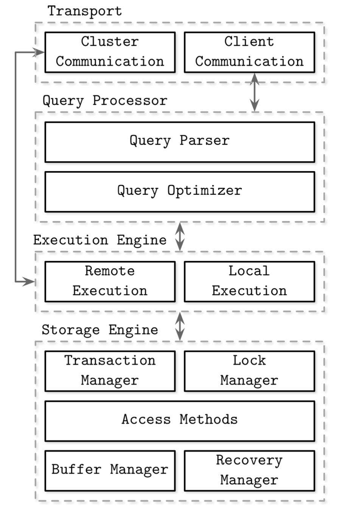数据库管理系统使用的是 client/server 模式，数据库系统的实例 (节点) 充当服务端 server 角色，应用的实例则充当客户端 client 的角色。
客户端的请求通过 transport 传输层 子系统接收，这些请求已查询的形式送达，大部分情况下他们是某种查询语言的表达式，传输层子系统同时还负责数据库集群中节点与节点之间的通信。
在接收到请求后传输层将查询转发给 query processor 查询处理器进行解析、翻译跟验证，在解析完成后，会对其进行访问控制验证，确认其执行权限。
之后解析完成的查询会被转发给 query optimizer 查询优化器，他会首先对查询中不必要的或者多于的部分进行排除跟裁减，然后会尝试根据一些全局的信息来找出最高效的执行方式，比如根据索引数据的数据量，或者数据的分布信息（比如集群中的哪些节点包含所需的数据以及其传输的代价等）进行分析。优化器同时需要对查询解析的关系操作 (通常表示为依赖树) 以及优化 (如索引顺序、数据的基数以及选择访问的方式) 进行处理。
具体的查询最后通常会表示为 execution plan 执行计划 (或 query plan)，他是一个操作的序列，在他被完整执行之后我们就能得到所需要的查询结果。相同的查询可能会同时符合不同的查询计划，优化器会在符合的查询计划中挑选出最合适的。
执行计划最后会交由 execution engine 执行引擎来执行，他会收集本地以及远程操作的执行结果，远程执行可能还会涉及到集群中其他节点的数据读写跟复制等操作。
本地的查询 (直接从客户端或其他节点发出的) 会交给 storage engine 存储引擎进行处理，存储引擎由下面的几个组件组成
-
Transaction manager该管理器对事务进行调度，以保证这些事务不会导致数据库产生逻辑性上的不一致。
-
Lock manager该管理器为数据库上执行的事务所涉及到的对象进行锁的管理，确保那些并行的操作不会违反数据在物理上的完整性。
-
Access methods (storage structures)该管理器负责访问跟组织磁盘上的数据，访问的方式主要包括了堆文件及存储的数据结构如 B-Trees 或 LSM Trees。
-
Buffer manager该管理器对内存中的数据页进行缓存
-
Recovery manager该处理器管理了操作日志，并负责将系统从失效的状态中恢复到正常状态。
这些组件合到一起就是，事务跟锁管理器负责并行控制，他们让并发操作能够尽量高效的执行，并确保数据在逻辑跟物理上的完整性。
Memory - Versus Disk-Based DBMS
数据库系统将数据存储在内存以及磁盘中，In-memory database management systems 内存式数据库管理系统 (有时也称为主存式数据库管理系统) 主要将数据存储于内存中，然后使用磁盘来作为恢复及日志记录的支持。Disk-based 基于磁盘的数据库管理系统则将大部分的数据保存在磁盘中，然后使用内存来缓存磁盘中的及一些临时性的数据。两种类型的数据库都会使用磁盘来作为重要的扩展，只是内存性数据库只会将数据存储在内存中。
内存的访问速度相较于对磁盘的访问速度，至今仍然要快出几个数量级。因此使用内存作为主要的存储介质是非常有吸引力的，并且随着内存价格的下降这样做具有了更高的经济可行性。然而，内存的价格相对于类似 SSD 跟 HDD 这些持久化介质来说仍然是比较高昂的。
内存数据库系统跟基于磁盘的数据库不仅仅是其主要的存储介质有所不同，还包括了如实现的数据结构、数据组织跟具体的优化技术等等区别。
数据库使用内存作为主要存储截止主要是为了性能、相对较低的访问开销及粒度。而且对内存的操作相对于磁盘也是简易了许多。操作系统所抽象的内存管理机制允许我们自如的控制对任意内存大小进行分配跟释放。在磁盘中，我们需要手动的去管理数据间的引用，序列化的格式，被释放的内存跟碎片等问题。
内存数据库数据增长的主要的限制因素是内存的不稳定性 (换句话说就是较弱的可靠性) 以及花费的成本。因为内存中的数据是非持久化的，所以软件的错误、崩溃、硬件的失效或是电源的切断都会导致数据丢失。当然也有许多办法来确保可靠性，比如提供不会中断的电源跟有备用电池的内存，但这又会导致额外的硬件资源跟操作要求。在实际实践中，这些都不会发生，主要还是归因于磁盘更容易进行管理以及拥有更低廉的价格。
但随着高可用跟更流行的 Non-Volatile Memory (NVM) 的发展，这个情形似乎会发生转变。NVM 存储能够减少或是消除 (依赖一些其他的技术) 读写延迟间的不对称性，提供更高的读写性能，以及允许使用内存寻址的方式来访问。
Durability in Memory-Based Stores
内存数据库系统使用磁盘进行备份来提供可靠性跟防止数据的丢失。有一些数据库则选择只将数据存储在内存中，并不做任何可靠性的保证，但是这类的数据库我们并不会在本书内进行讨论。
在可以确保操作完成之前，会先将其写入到顺序的日志文件中，我们将会在 Recovery 章节中来讨论 Write-ahead Log 预写日志。为了防止在数据库启动或是崩溃后需要回放所有的操作日志，内存数据库会管理一份数据备份。这份数据备份会以有序的基于磁盘的数据结构进行管理，并且对这个数据结构的操作一般都是异步的 (是与客户端请求分离的) 批量提交，用来减少 I/O 操作。在需要的时候，数据库的内容就可以从这个备份跟日志进行恢复了。
日志的记录通常会批量的应用到备份数据上，在日志处理完之后，备份数据就成了数据库某个时刻的快照，这时在这个时刻之前的日志就可以被丢弃了。这个操作称作 checkpointing 检查点。他能够减少恢复的时间，让数据库通过日志保持在足够新的状态，以便客户端无需在更新备份数据时被堵塞。
不能说内存数据库等同于具有巨大页面缓存的磁盘数据库。尽管页面会被缓存在内存中，但序列化格式、数据的布局都会增加磁盘数据库的开销，这些开销无法跟内存存储中所达到的优化程度做对比。
基于磁盘的数据库使用了特殊的为磁盘访问做了优化的存储数据结构。在内存中，可以对指针快速的进行跟踪，而且内存的随机访问要远远比磁盘的随机访问要快，基于磁盘的存储数据结构通常会使用较宽并且较低的树结构，因为基于内存的实现可以从一个很大的池中获取所需的数据结构并做出各种优化，但这些在基于磁盘的实现中基本上是不可能做到的。同样的，在磁盘上处理可变长度的数据需要特别注意，而在内存中他可能只是从指针中获取一个值。
在某些场景中，确认整个数据集是否能够放进内存中是有意义的。有些数据集受真实世界的限制可能只有少量 KB 的数据跟数据条目的限制。比如学校中的学生记录、大企业中的客户记录或在线商城的存货量。
Column- Versus Row-Oriented DBMS
大部分的数据库都会存储一系列的数据记录，这些记录集合称为 Table 表 ，表则由 Column 列跟 Row 行组成。Field 字段是行与列的交集: 他是单一的某些类型的值。属于同一个列的字段往往具有相同的数据类型，比如如果我们定义了一个表用来保存用户记录，那其中的用户名都会是同一个类型并且属于同一个列。属于同一条记录的值的集合则形成一行 (往往会使用某个 key 来作为这行的标识符)。
有一种用来对数据库进行分类的方式是看数据是如何在磁盘中存储的：基于行的或基于列的。数据表能够按照水平 (将属于同一行的数据保存到一起) 或者垂直 (将属于同一列的数据保存到一起) 的方式进行分区。Figure 1-2 描述了其中的区别： (a) 展示了按照列进行分区的数据，(b) 展示了按照行进行分区的数据。

面向行组织数据的数据库有: MySQL、PostgreSQL，以及大部分的传统关系型数据库都是。有两个开源的先驱列式数据库，分别是 MongoDB 跟 C-Store (C-Store 的前任是名为 Vertica 的开源数据库)
Row-Oriented Data Layout
面向行的数据库管理系统使用记录或行来存储数据。他们的布局非常接近表格式的形式，即每一行都拥有相同的字段集合。比如面向行的数据库可以高效的存储用户实体信息，包括名字、出生日期跟电话号码:
| ID | Name | Birth Date | Phone Number |
|---|---|---|---|
| 10 | John | 01 Aug 1981 | +1 111 222 333 |
| 20 | Sam | 14 Sep 1988 | +1 555 888 999 |
| 30 | Keith | 07 Jan 1984 | +1 333 444 555 |
使用多个列组成一行 (如这里的名字、出生日期跟电话号码) 并用一个键来作为唯一标识符 (在这里是一个自增的数字) 的方式能够适应许多的场景。如用户记录中的所有字段常常会被同时读取；创建记录时 (如用户填写了注册表单) 能够将所有信息同时写入存储引擎；同时每个字段也能够单独的进行修改。
面向行的存储在大部分按照行来访问数据的场景中都非常有用，而存储整行的数据也同时提高了其空间局部性。
因为数据在如磁盘这类持久化介质上一般都是以 Block 块的方式来访问的 (换种说法就是，在磁盘中最小的访问单元就是块)，一个单独的块可以包含记录的所有列。这对需要访问整个用户记录的场景是非常高效的，但对于获取多个记录当只需要其中某些列的查询 (比如只需要获取电话号码) 来说代价确实比较大的，因为那些不需要的字段也会同时被读取。
Column-Oriented Data Layout
面向列的数据库管理系统将数据以垂直的方式 (比如以列的方式) 而不是整行的方式进行存储。在这里同一个列的数据会以连续的形式存储在磁盘上 (对比与上一个例子中以行的方式连续保存)。举例来说，我们存储股票市场的价格，则所有的价格都会存储到一起。不同列的的值会被分割到不同的文件或者是文件段，这让引擎能够高效的根据列来进行查询，因为他们可以单独的获取，而不是读取整行数据然后再丢弃那些查询不需要的列。
面向列的存储对于一些分析及数据聚合的场景非常有效，比如查找趋势，计算平均值等等。处理复杂的聚合常常是从具有非常多列的记录中挑取其中少数的列 (如本例中的价格) 进行集中的处理。
作为一种逻辑上的表达方式，股票市场的价格信息依然可以用表的形式来呈现
| ID | Symbol | Date | Price |
|---|---|---|---|
| 1 | DOW | 08 Aug 2018 | 24,314.65 |
| 2 | DOW | 09 Aug 2018 | 24.136.16 |
| 3 | S&P | 08 Aug 2018 | 2,414.45 |
| 4 | S&P | 09 Aug 2018 | 2,232.32 |
然而物理上的列式存储布局看起来将是完全不一样的，每个相同列的值会保存在更靠近的位置
- Symbol: 1:DOW; 2:DOW; 3:S&P; 4:S&P
- Date: 1:08 Aug 2018; 2:09 Aug 2018; 3:08 Aug 2018; 4:09 Aug 2018
- Price: 1:24,313.655; 2:24,136.16; 3:2,414.45; 4:2,232.32
为了能够重组数据元祖 (可能对联表、过滤跟多行的聚合分析有用) ，我们需要在列上维护一些元信息用来定位哪些数据跟哪些列是关联的。如果我们直接将信息记录到值上，那每个值都需要保存这个键，这将导致该信息的大量重复并引起存储空间的剧增。有些列式存储引擎使用了隐含的标识符 (virtual IDs) 来作为替代，还使用了值在文件中的位置 (也可称为偏移量) 来定位关联的数据。
在最近的几年里，因为有更多需要在庞大数据集上运行复杂查询的需求浮现，我们看到了许多新的列式文件存储结构，如 Apache Parquet, Apache ORC, RCFile，同时也有一些新的列式存储引擎如 Apache Kudu, ClickHouse 等。
Distinctions and Optimizations
说列式存储跟行式存储之间的差别只是存储方式不同是不够的，选择数据的布局只是其中的步骤之一，我们还需要其他的各种方式去优化列式存储引擎。
一次读取同一列的多个值能显著的提高缓存的命中率以及提高计算的效率。在现代的 CPU 中，使用向量化指令能够在一条 CPU 指令中处理多条数据。
将相同类型的数据存储在一起 (比如数字跟数字、字符串跟字符串一起) 让数据的压缩率得到了更好的提升。我们还可以根据数据类型来选择不同的压缩算法，这样能根据不同的场景来得到最好的压缩效果。
想知道何时使用面向列还是面向行的存储引擎，你需要了解具体的对数据的访问模式。如果读取数据时是已记录的方式来消费的 (即每次都需要读取大部分的列) 并且具体的工作负载是由单个查询跟区间扫描组成的，那面向行的方式能够得到更好的效果。如果扫描需要跳过许多的行，或者分析更多的只需要一小部分的列，那就更值得去考虑使用面向列的方式。
Wide Column Stores
面向列的数据库很容易跟 Wide Column Store 宽列存储混淆，比如 BigTable 或 HBase，他们的数据呈现为一个多重维度的字典，许多的列使用 Column families 列族来进行了分组，在每个列族里面的列最终会使用基于行的方式来进行存储。这样的布局对那些使用键值或键值序列进行检索的数据是非常有效的。
Bigtable 论文中的官方例子是 WebTable。WebTable 以时间戳分版本存储了目标网页的内容快照以及其他的一些属性。这些网页使用反转的 URL 链接作为标识符，并且所有的属性 (如页面内容、锚点、页面的引用等) 都按照页面获取的时间戳建立了不同的快照版本。用简单一点的方式来描述就是，如 Figure 1-3 所示
{
"com.cnn.www": {
contents: {
t6: html: "<html>..."
t5: html: "<html>..."
t3: html: "<html>..."
},
anchor: {
t9: cnnsi.com: "CNN"
t8: my.look.ca: "CNN.com"
}
}
"com.example.www": {
contents: {
t5: html: "<html>..."
},
anchor: {}
}
}
数据按照多个维度存储到一个具有层次结构的有序的字典内：我们能够通过网页的反转 URL 来定位到特定页面的内容或者锚点的指定时间戳版本。每一行都使用称之为 row key 的键建立了索引。相关联的列则按照列族进行了分组 -- 如示例中的 contents 跟 anchor 列族，因此不同列族的数据会在磁盘上分开存储。每一个列族内的列都以称为 column key 的键作为标识符，他们是以列族名跟列名 (如示例中的 html, cnnsi.com, my.look.ca) 所组合而成。列族会按照时间戳存储数据的多个版本。这个布局允许我们快速的定位高层级的实体 (如本例中的网页) 跟他们的参数信息 (如网页中的内容及其他页面的链接的各个版本)。
对理解 Wide Column Store 的各个概念是非常有用的，他们的物理布局相对其他的有很大不同。对列族的一个略为粗略的结构图在 Figure 1-4 展示：每个列族被独立的进行存储，但同一个列族内的数据是集中存储的。

Data Files and Index Files
数据库系统的主要目标就是能够存储数据然后在需要的时候能够快速的进行读取。但数据应该如何组织呢？为什么我们需要使用数据库管理系统而不是直接管理一大堆的文件？文件要如何组织才能高效的使用呢？
数据库确实使用文件来存储我们的数据，但他并不是直接使用了文件系统的目录跟文件的结构来定位数据记录，他实现了自定义的文件存储格式来组织文件。在扁平文件上使用自定义文件格式来组织的主要原因有：
-
Storage efficiency 高效存储
文件的组织最小化了存储每条数据记录的开销
-
Access efficiency 高效访问
能够在最小化的步骤中快速定位所需的数据记录
-
Update efficiency 高效更新
对记录进行更新时，能够最小化对磁盘数据的修改
数据库系统以表的形式存储数据记录，表则是以字段来组成，一般来说每个表都会以独立的文件来表示。表中的每条记录都能够以 search key 来进行定位。为了定位到某条记录，数据库系统使用了索引：一种辅助性的数据结构，他帮助数据库系统能够在不需要对整个表进行扫描的前提下高效的定位数据。索引使用了表字段的子集进行构建，并以对应的自己作为该记录的新的标识符。
一般来说数据库系统会把数据文件跟索引文件区分开：数据文件存储具体的数据记录，索引文件则存储记录的元数据并使用该元数据来从数据文件中定位数据。一般来说索引文件都会比数据文件要小。文件会以页来进行分区，而页的尺寸一般会跟磁盘的块大小对应。页一般会被组织为一系列的记录或是一系列的分槽页。
新的数据记录 (比如新插入的数据) 跟对现有记录的更新会被表现为一系列的键值对，大部分现代的存储系统并不会明确的删除数据，相反，他们使用 deleteion markers 删除标识 (或称为 tombstones) 作为删除的元数据，例如是一个 Key 或是一个时间戳。那些由删除或更新被标记的记录所占用的空间会在垃圾回收时进行回收，比如读取其对应的页，将仍然存活的记录写入到新的位置，并且丢弃掉已经删除的那些。
Data Files
数据文件 (有时也称为 Primary files 主文件) 能以 Index-organized tables (索引组织表 IOT) 或 heap-organized tables (堆文件 heap files) 或 hash-organized tables (哈希文件 hashed files) 的方式实现。
存储在堆文件的记录不需要遵从某些特定的顺序，在大部分情况下他们按照写入的顺序来排序。使用这种方式在有新页面添加进来时无须花费额外的工作或进行文件重组。堆文件需要额外的索引数据结构来定位到已存储的数据记录，以此实现检索功能。
对于哈希文件，数据记录会存储到桶中，而数据记录的标识符则作为 Key 由哈希函数计算后确认该记录对应的哈希桶。在同一个桶中的数据记录可以按照 Key 来进行排序以提高同一桶中的查找速度。
索引组织表将数据存储在索引上，因为数据记录是以 Key 的顺序存储的，对索引组织表进行区间扫描可以实现为顺序扫描其该表的内容。
当数据记录是存储在独立的文件中时，索引文件将保存数据实体，从而唯一的对数据进行标识并且包含足够的信息用来定位记录在数据文件的位置。比如，我们可以保存数据文件的偏移量 (有时也称为 row locators 行定位符) 或在使用哈希文件时保存桶的 ID，或在使用索引组织表时保存完整的数据实体。
Index Files
索引是一种用来对存储在磁盘中的数据进行组织并提供高效读取操作的数据结构。索引文件以特定的数据结构通过 Key 定位到数据记录在数据文件中的位置 (如果使用的是堆文件) 或是主键 (如果使用的是索引组织表) 存储的位置。
对应到主文件 (数据文件) 的索引成为主索引，然而在大部分的场景中我们都可以假定主索引都是通过 Primary key 主键或是由其他一些键所组成的主键来构建。其他的索引则称为 secondary 二级索引。
二级索引可以直接指向对应的数据记录，也可以只是存储其对应的主键。指向数据记录的指针可以存储堆文件或是索引组织表的偏移量。多个二级索引可以指向同一条数据记录，也允许同一个数据记录在不同的二级索引中使用不同的字段作为标识符。主索引文件为每条唯一记录保存了唯一的搜索键，二级索引则允许多条数据记录使用同一个搜索键。
如果数据记录的顺序跟搜索键的顺序是一致的，则称该索引为 clustered 聚集索引 (也广泛的使用 clustering)。聚集的数据记录通常会保存在同一个文件或者是保障了键的顺序的聚集文件中。如果数据存储在独立的文件中，并且数据记录的顺序跟键的顺序不是一致的，则称索引为非聚集的 (也会使用 unclustered)。
Figure 1-5 展示了这两种区别
- a) 两种索引方式在二级索引中引用数据的方式不同
- b) 二级索引使用一级索引来间接的引用数据

索引组织表在索引中存储数据，并且是定义为聚集的。主索引绝大部分情况下都是聚集的。二级索引在定义上是非聚集的，他们提供了用非主键的键来快速访问数据的功能。聚集索引可以是索引组织表也可以是索引跟数据文件分离的形式。
大部分的数据库系统都有固定的主键，他可以是用来唯一标识数据记录的列的集合。当主键没定义时，存储引擎会创建一个隐含的主键 (比如 MySQL 的 InnoDB 会自动添加一个自增的列并自动递增该字段的值)。
这个技术在许多不同的数据库系统中都使用了：关系型数据库包括 MySQL 跟 PostgreSQL，基于 Dynamo 的 NoSQL 存储如 Apache Cassandra 跟 Riak，文档型的存储则有 MongoDB。还有其他未提到的名字，但他们中的大部分都是使用了这个技术。
Primary Index as an Indirection
在数据库社区中，对选择文件偏移量还是主键索引作为对数据记录的引用存在不同的意见。
两种做法各有其优点跟缺点，但最好还是需要在他们的完整实现上进行讨论。如果直接引用数据本身，我们可以减少对磁盘的读取，但在需要付出更多的代价来处理数据的更新或是重新分配的情形。使用间接引用主索引的方式允许我们无需为数据的更新付出额外的代价，但却会带来额外的读取操作。
更新索引在工作负载中绝大部分是读取操作时是是可行的，但这个方式并不适用于有多个索引且存在大量写的工作负载。为了减少数据更新的成本，有些实现使用主键来代替偏移量作为间接层。比如 MySQL 的 InnoDB 使用主索引并执行了两次查询：第一次在二级索引中进行，第二次则在主索引中进行。相对于在二级索引中存储偏移量的做法，这增加了对主索引进行读取的开销。
Figure 1-6 展示了两种方式的区别
- a) 两种索引直接从二级索引引用数据条目
- b) 二级索引需要使用主索引间接的定位数据实体

还有另外一种混合使用数据文件偏移量跟主键的方式。首先，需要检查文件的偏移量是否有效，如果偏移量失效了则需要付出额外的开销到使用主键到主索引查询，最后在找到新的偏移量时去更新二级索引。
Buffering, Immutability, and Ordering
存储引擎都需要基于某些特定的数据结构，但是这些数据结构并没有对缓存、状态回复、事务这些存储引擎底层的组件有明确的语义定义。
在下一章节中，我们会开始讨论 B-Tree 以及试着理解为什么会有这么多的 B-Tree 变种，以及为什么一直持续不断的有新的数据存储结构出现。
存储数据结构有三个通用的变量：他们会使用 buffering 缓冲 (或避免使用)，使用 immutable 不可变 (或 mutable 可变) 的文件，按照 order 顺序来存储数据 (或不按顺序)。大部分的存储数据结构的区别跟优化都跟这三点相关。
-
Buffering
这部分定义了存储数据结构需不需要将在写入磁盘前某些数据缓冲在内存里。当然，每个基于磁盘的数据结构都会需要某种级别的缓冲，因为磁盘进行读写所传输的最小单元是块，这个级别描述了如何尽量写入完整的块。在这里，我们还要谈论避免缓冲，有些存储引擎的实现就是这样做的。我们在本书讨论的第一个优化是为 B-Tree 添加内存的缓冲来分摊 I/O 开销。(在 Lazy B-Tree 中)。但是这并不是唯一应用缓冲的地方，比如 two-component LSM Tree，尽管跟 B-Tree 有点类似，但他使用了不同的方式来使用缓冲，并最终将缓冲合并成不可变的。
-
Mutability (or immutability)
这部分定义了存储数据结构要不要实现：从文件中读取数据，更新这部分数据，然后将更新后的结果写入到文件的同一个位置。不可变的数据结构是
append-only的：在写入之后，文件的内容不会再进行更改，相反的，所有的修改会以添加的信息写到文件的末端。还有其他的方式来实现不可变性，其中一个是使用copy-on-write写时复制技术，被修改的页面保存了修改后的版本，然后将它写到文件中的新的位置，而不是写到原来的位置。我们常听到 LSM 跟 B-Tree 的区别被描述成不变性跟就地更新之间的差异，但也有一些其他的数据结构 (如 Bw-Tree) 是从 B-Tree 启发而来但却是不可变的。 -
Ordering
这部分定义了数据记录记录到磁盘时需不需要跟他的 Key 保持相同的顺序。换句话说，连续的 Key 在磁盘是连续存储的。Ordering 通常定义了能不能高效的对记录进行区间扫描，而不只是用来定位独立的数据记录。数据存储时如果是乱序的 (比如按照插入的顺序) 有时也为写入时间的优化提供了可能性。比如 Bitcask 跟 WiscKey 存储数据的方式是通过直接附加到文件末尾。
当然，对这三个概念的粗略讨论是无法展示他们的能力的，我们将会继续在本书后续的章节中对其进行讨论。
Summary
在本章我们讨论了数据库管理系统的架构以及主要的几个组件。
还重点讨论了基于磁盘的数据结构的重要性，以及他跟基于内存的数据结构的区别。对此我们总结基于磁盘的数据结构对两种类型的存储都是非常重要的，只是他们会用来达成不同的目标。
为了理解访问模式对数据库系统设计的影响，我们讨论了基于行跟基于列的数据库管理系统以及导致他们之间有所区别的因素。还从数据文件跟索引文件作为起点，开始了对数据是如何进行存储的讨论。
最后我们介绍了三个核心的概念：Buffering 、Immutability 跟 Ordering。我们使用他们来贯穿整本书的核心属性跟使用他们的存储引擎。
更多的阅读
如果你想对我们本章中讨论的概念有更多的了解，可以通过下面的引用获取相关信息
-
Database architecture
Hellerstein, Joseph M., Michael Stonebraker, and James Hamilton. 2007. “Archi‐ tecture of a Database System.” Foundations and Trends in Databases 1, no. 2 (Feb‐ ruary): 141-259. https://doi.org/10.1561/1900000002.
-
Column-oriented DBMS
Abadi, Daniel, Peter Boncz, Stavros Harizopoulos, Stratos Idreaos, and Samuel Madden. 2013. The Design and Implementation of Modern Column-Oriented Database Systems. Hanover, MA: Now Publishers Inc.
-
In-memory DBMS
Faerber, Frans, Alfons Kemper, and Per-Åke Alfons. 2017. Main Memory Data‐ base Systems. Hanover, MA: Now Publishers Inc.
Chapter 2
B-Tree Basics
在前面的章节我们将存储的数据结构分成了类：mutable 可变的跟 immutable 不可变的，并且确认了不可变性是其中一个会影响到具体设计与实现的核心概念。大部分的可变数据存储结构都使用了就地更新的机制。在发生插入、删除或更新操作时，数据记录会在目标文件的原位置上直接更新。
存储引擎通常允许在数据库中存在一条数据记录的多个版本；比如在使用了 Multiversion Concurrency Control (MVCC 多版本并发控制) 或 Slotted Page 组织时。为了简化的目的，现在我们先假定每个 Key 只会关联到唯一的一条数据记录，并且只有一个唯一的位置信息。
现在最流程的存储数据结构之一就是 B-Tree。许多开源的数据库都是基于 B-Tree 的，并且经过了多年的验证，他确实适用于大部分的场景。
B-Tree 并不是近期才发明的：他在 1971 年时已经被 Rudolph Bayer 及 Edward M. McCreight 进行了介绍并一直流行到现在。在 1979 年时已经出现了不少 B-Tree 的变种。Douglas Comer 在 Douglas Comer 中对其进行了系统性的整理。
在深入 B-Tree 之前，先来讨论为什么我们要用他来替代传统的搜索树，比如 Binary search tree 二叉搜索树、2-3-Trees 跟 AVL Tree 平衡搜索树。现在我们先来回顾下什么是二叉搜索树。
Binary Search Trees
二叉搜索树 (BST) 是有序的内存数据结构，被用来提供高效的基于键值对的查找。BST 包含了许多的节点，每个树的节点都呈现为一个 Key 及跟该 Key 相关联的数据，每个节点有两个子节点 (因此取名二叉)。BST 从一个单独的名为 root 的节点开始，并且一棵树只允许有一个 root 节点。Figure 2-1 中我们展示了个二叉搜索树的例子

每个节点将搜索空间分割为左子树 subtrees 跟右子树，正如 Figure 2-2 展示的，一个节点的 Key 会大于其左子树的所有节点，并且会小于其右子树的所有节点。

从 root 开始沿着左子树一直遍历到最左的叶子节点 (叶子意味着他不具有子节点) 就能定位到树中最小的 Key 以及其关联的数据。同样的，沿着右子树一直遍历到最右的叶子节点能够定位到树中最大的 Key 及其关联的数据。关联的数据允许存储在树中的任意节点中，然后查找会从 root 节点开始，但可能会在非叶子节点就被中断或返回，比如已经在较高的层级中找到了对应的 Key。
Tree Balancing
插入的操作并不会遵循哪种指定的方式，元素的插入可能会导致树失去平衡 (比如其中一个分支比其他的分支要长)。在 Figure 2-3 中展示了最严重的场景，其中展示了一颗看起来更像是链表的病态的树，作为一个设计目标是对数复杂度的树 (如 Figure 2-3 )，最后演变成了线性复杂度。

这个例子可能将问题描述的略微极端了，但他说明了为什么树需要平衡性: 尽管不是所有的节点最后都会往一边倾斜，但毫无疑问的是这种情形会显著的降低查询效率。
一个平衡的树的高度是被定义为了 Log2N，N 是指树中所有节点的总数，并且左右两颗子树的高度只差不会超过一。在失去平衡时，我们会失去二叉搜索树的结构给我们的性能优势，并且插入跟删除操作也会影响树的形状 (平衡)。
在一颗平衡的树中，在平均情况下每次进入左子树或右子树都能够减少一半的查找空间，所以查找的复杂度为 O(log2 N)。如果树是失衡的，最差的情况下复杂度会增长为 O(N)，因为我们最终可能会遇到树的所有节点都在同一侧的情况。
为了不产生在添加新元素后其中一侧分支越来越长，另一侧却还是空的情况 (如 Figure 2-3 (b))，让树继续保持平衡。可以通过重新组织树的节点来降低树的高度，并让两侧分支的差距保持一定的边界。后
其中一种保持树平衡的方法是在添加或删除树的节点对其进行翻转。如果插入的操作导致让当前分支失衡 (分支里两个连续的节点只有一个子节点)，我们就可以 rorate 旋转中间的节点，如 Figure 2-4 中展示的，对 node(3) 进行旋转，我们称它为 pivot 节点，旋转后将它提高几个层级，并且将它的父节点设为右子节点。

Trees for Disk-Based Storage
如前面提到的，失衡的树有着糟糕的 O(N) 的复杂度。平衡树给我们的平均复杂度应该是 O(log2 N)。在这个时候下，由于扇出量很低 (扇出量是我们允许的节点所能拥有的最大子节点数)，我们需要频繁的去维持树的平衡，旋转节点，并更新对应的指针等信息。高昂的管理成本让 BST 作为基于磁盘的数据结构成了不现实的选择。
如果我们希望在磁盘中管理 BST，需要面对几个问题。其中一个是局部性：数据是以随机的顺序添加的，没办法保证新增的节点会写到其父节点附近，这意味着节点的子节点可能会在多个磁盘页中保存。我们可以通过调整树的布局跟使用基于页的二叉树来改善这种情况。
另外一个问题跟子节点也是紧密相关的，就是树的高度。因为二叉树的扇出量只有二，因此高度是树节点总数的以二为底的对数，因此我们需要花费 O(log2 N) 次寻址来定位需要查找的元素，并导致相同次数的磁盘数据传输。2-3-Tree 跟其他扇出量低的树都具有相同的限制：他们可以高效的在内存中使用，但较少的节点数意味着将他们应用到外部存储器时变得不现实。
一个拙劣的基于磁盘的 BST 实现需要许多的磁盘寻址来做比较，因为他没有建立起局部性的概念。这让我们踏上了寻找具有这种特性的数据结构的路。
考虑到这些因素，一个能够适配磁盘的树的实现需要满足下面两个特性：
- Hight fanout 高扇出能够提高邻接节点的局部性
- Low height 低高度能够减少查找过程所需的次数
扇出跟高度有着一个相反的关系：更高的扇出量意味着更低的高度。如果扇出很高，每个节点能够持有的子节点数会更多，这减少了整体的节点数，因此也会产生更低的高度。
Disk-Based Structures
我们已经在比较通用的层面上讨论过基于内存及基于磁盘的存储了。现在可以来具体的描绘一下具体数据结构之间的差异：有一些适合使用在磁盘，有一些则更适合使用于内存中。
就像我们讨论过的，不是所有满足空间跟复杂度的数据结构都能够高效的应用在基于磁盘的存储上。数据库中的数据结构需要能够适配持久化介质所带来的限制。
保存在磁盘中的数据结构通常用于处理那些数据量巨大，没办法将整个数据集存放到内存的情形。只有一部分的数据能够缓存在内存中，然后其他的则以能够高效访问的形式存储在磁盘中。
Hard Disk Drives
大部分传统的算法都是在流行以机械硬盘作为持久化存储介质时期开发的，他们的设计深受那个时代的影响。在之后新的存储介质被开发出来了，如闪存，这又启发了一系列新的算法的产生，也促使旧的算法进行了很多的调整，来适配这些新的硬件。到了现在，又出现了许多新的、优化来支持新的非易失性、字节寻址的存储设备的数据结构。(比如 XIA17 跟 KANNAN18)
对于机械硬盘来说，随机读取会因为寻址而提高性能开销，因为他们需要硬盘进行转动好让机械磁头能够移动到对应的位置来进行读写。然而，在这部分昂贵的操作完成之后，进行的顺序读取跟写入相对来说都是开销比较小的。
在机械硬盘中最小的传输单位是 sector 扇区，所以当对其进行操作时，最少会对一个扇区进行读或者写。扇区的尺寸一般会在 512 个字节跟 4Kb 之间。
磁头的定位是 HDD 硬盘操作中最为昂贵的一步。这也是为什么我们一直听到 Sequential I/O 顺序性 I/O 操作更好的原因: 连续性的从磁盘读取跟写入数据。
Solid State Drives
固态硬盘 (SSD) 没有需要移动的部分: 那里没有磁盘的转动，也没有磁头需要因为读取产生的定位操作。通常的 SSD 是使用 memory cells 内存单元组成的，他们连接成 strings (通常是 32 到 64 个内存单元构成一个 string)，strings 又会组成 arrays 数组，数组再组成 pages 页面，最后由页面组成 blocks 块。
取决于具体使用的技术，一个内存单元可以存储一个或多个位的数据。设备之间的页面大小也可能是不同的，但一般来说他们的大小都会在 2 到 16Kb 之间，块则通常包含 64 到 512 个页面。块会组成 planes 平面，然后最后平面会被存放在 die 中。一个 SSD 可以有一个或多个的 die。Figure 2-5 展示了他们之间的层次关系
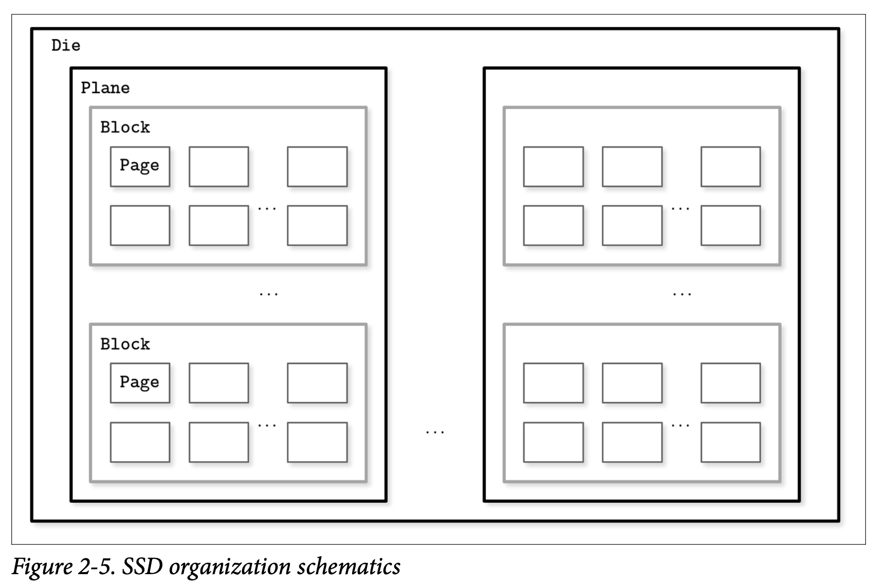在 SSD 中进行读写的最小单位是页。但是，我们只能改变空的内存单元 (比如在写之前要先清除某个区域)。最小 erase 清除的单位不是页，而是包含了多个页的块，所以经常会将其称为 erase block 清除块。在一个空的块中可以对其页面进行顺序的写入。
其中有个内存控制器负责将页 ID 映射为物理位置，跟踪空白的区域，写入跟丢弃页面，这个控制器称为 Flash Translation Layer (FTL) 闪存翻译层。当 FTL 发现一个块可以安全的清除时，他还会负责进行垃圾回收的工作。有些块可能会有部分存活的页，在这种情况下，他会将这些块中存活的页面分配到新的位置，然后为他的页 ID 重新进行映射到新的位置。在这之后，他会清除那些现在已经没在使用的块，让他们可以支持后续新的写入操作。
因为两种设备类型 (HDD 跟 SSD) 都是使用地址来操作大块的数据，而不是操作独立的字节 (比如按块来访问数据)，所以当今大部分的操作系统都为基于块设备进行了抽象。他们隐藏了内部的磁盘结构跟缓冲 I/O 操作，所以当我们从基于块的设备中读取单个 word 字时，其实整个块都会被包含在当次读取中。这是一个我们在使用磁盘数据结构是需要时刻考虑的限制。
在使用 SSD 时我们不需要像使用 HDD 一样将随机 I/O 跟 顺序 I/O 的区别看得那么重，因为随机跟顺序的读取延迟并没有太大的差别。但其中仍有一些由预读取、读取连续页面跟内部并行性引起的区别。
尽管垃圾回收通常在后台运行，但他仍然可能会对写操作造成负面的影响，特别是处理随机跟未对齐的写负载。
写入只会按照整个块来进行，并会将连续的写操作合并写到同一个块，这能够减少所需的 I/O 操作。我们会在后续的章节中讨论使用缓冲跟不变性会用来达到这个目标。
On-Disk Structures
除了磁盘访问本身的代价之外，构建高效的基于磁盘的数据结构的主要限制跟设计的条件主要来自于对磁盘的最小操作单位是块。要根据指针定位到具体某个块中的位置，我们需要将整个块都读出来。因为无论如何我们都需要这样做，因此可以通过调整数据结构的布局来利用这个特性。
我们已经在之前的章节中数次提到过指针，但这个词在基于磁盘的数据结构中的语义与之前稍有不同。在磁盘中，大部分时间我们都需要手动管理数据的布局 (除了使用 Memory Mapped File 技术时不需要)。这依然跟普通的指针操作类似，但我们需要自己来计算目标指针的地址并显式的跟随指针。
大部分时间磁盘上的偏移量是预先计算好的 *(避免指针所指向的区域在指针被写入磁盘之后还未写入磁盘)*又或者会缓存在内存中直到指向的区域都被写入磁盘。创建一个有长依赖链条的磁盘数据结构会大幅提高代码跟数据结构本身的复杂度，因此会倾向于将指针的数量跟其指向的范围控制到最小。
总而言之，基于磁盘的数据结构的设计会考虑其目标存储的细节，并将磁盘的访问次数优化到最少。我们可以通过提高局部性、优化数据结构内部的表现形式跟减少页外指针的数量来得到优化效果。
在 Binary Search Trees 一节中，我们总结出了高扇出跟低高度是设计基于磁盘的数据结构时达成优化的重要属性。我们还额外的空间开支来自于指针，以及为了保持树平衡而带来的管理这些指针的开支。B-Trees 组合了这些想法：提高节点的扇出量，降低树的高度、节点的指针数以及维持树平衡操作的频率。
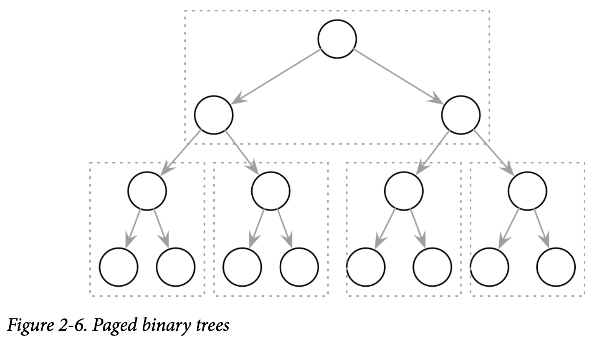Paged Binary Trees
下图我们将二叉树的布局调整为将多个节点组合到同一个页上，如 Figure 2-6 所示，提高了数据的局部性。在需要查找下一个节点时，只需要在已经读取到内存的页中查找即可。但是任由一些额外的开销来自于节点跟指针之间。对存储在磁盘上的数据结构进行管理不是容易的事情，尤其是在 Key 跟 Value 不是以有序的方式添加的。平衡需要对页进行重建，这也会导致需要更新指针的信息。
Ubiquitous B-Trees
可以将 B-Trees 想象成一个图书馆中的巨大目录：首先你要找到正确的陈列柜，然后在这个柜上找到正确的书架，然后在这个书架上找到正确的抽屉，然后在抽屉中找到你正在寻找的那个卡片。类似的， B-Tree 构建了一个帮助使用者快速定位他想找的数据的层次结构。
如我们之前讨论过的二叉查找树，B-Tree 构建为一个平衡搜索树，但跟普通的搜索树的区别在于具有更大的扇出量 (拥有更多的子节点) 跟更小的高度。
在大部分的介绍里面，二叉树的节点都被描绘为一个圆。因为每个节点唯一的职责就是保存对应的键跟将对应的区间分为两部分，这个细节水平基本是很直观的。而 B-Tree 的节点一般会被描绘为一个矩形，还重点指出了指针块来描述子节点跟分隔键之间的关系。Figure 2-7 依次展示了二叉树、2-3-Tree 跟 B-Tree 的节点，这能够帮助我们了解他们之间的相同点及差别

没有什么能够阻止我们以相同的方式画出二叉树。这些数据结构都具有类似的使用指针的语义，他们的区别则是从如果管理其中的平衡开始。Figure 2-8 展示了 BST 跟 B-Tree 之间的类似的点：Key 会将树分裂成子树，并会用他来作为搜索目标的导航，你可以将它跟 Figure 2-1 做一下比较。
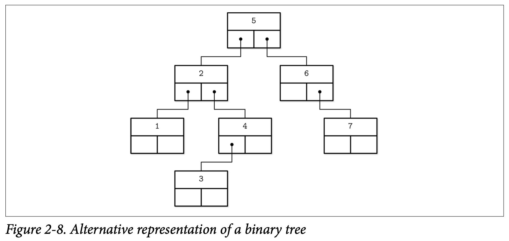B-Tree 是有序的：在 B-Tree 中的 Key 都会按照顺序来存储。因此为了定位到需要查找的 Key 我们可以使用类似二分查找的算法。这同时也暗示了 B-Tree 的查找具有对数级别的复杂度。举例来说，为了在 40 亿个元素中查找某个目标需要进行 32 次比较，如果每次比较都需要在磁盘中进行寻址的话，会明显的拖慢整个过程，但因为 B-Tree 的节点存储了成打或上百个元素，我们可以只在每个层级上只执行一次磁盘寻址。查找算法更具体的细节会在本章的后面详细讨论。
使用 B-Tre，我们可以高效的执行点跟区间的查询。点查一般在查询语言中使用相等表达式表示，用来定义单条记录。另一种区间查询在查询语言中则一般使用比较表达式 (如 <、>、≤、≥) 来按查询一批有序的数据。
B-Tree Hierarchy
B-Tree 由许多的节点组成，每个节点或保存最多 N 个 Key 跟 N+1 个指向子节点的指针。这些节点在逻辑上我们可以将他们分成三组：
-
Root node
没有父节点、位于树顶端的节点
-
Leaf nodes
位于树的底端、没有子节点的节点
-
Internal nodes
除了以上两种节点，剩下的就只有这种节点了，通过他们将树的根及叶子连接起来。这类节点一般会存在多个不同的级别 (深度) 中。
这个层级关系展示在 Figure 2-9 中
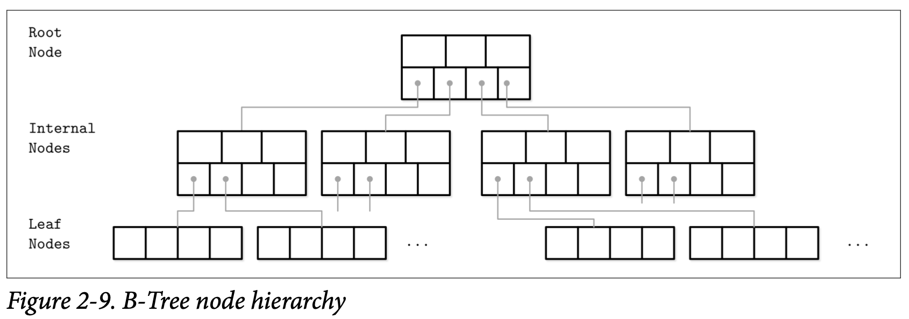因为 B-Tree 是按照 页 来进行组织的 (他们通常使用固定大小的页面尺寸)，因此我们将 节点跟页 作为相同的概念交替着使用。
节点的 capacity 容量跟其中真实存储的 Key 的数量的关系我们称之为 occupancy 使用率。
B-Tree 的特点是他的扇出量: 即每个节点存储的 Key 的数量。更高的扇出量让节点中存储的 Key 跟指针能够集中保存在单个块或多个连续的块中，因此能够分摊为了保持树平衡所所需对做的修改成本以及减少对磁盘的访问量。保持平衡的操作 (称为 splits 分裂跟 merges 合并) 会在节点写满或接近空时触发。
B^+^-Trees
我们介绍具有类似属性的树时都使用了 B-Tree 这个词。在前面所介绍的数据结构的更具体的名字其实是 B^+^-Tree。[KNUTH98] 将具有高扇出的树称为多路树进行了介绍。
B-Tree 允许在树中任意层级的节点中存储数据：包括根、内部节点跟叶子节点。B^+^-Tree 则只允许将数据存储在叶子节点中。内部节点只存储了 separator keys 分裂键，他用来告诉查询算法对应的键会出现在哪个叶子中。
因为 B^+^-Tree 只会在叶子节点存储数据，所有的操作 (插入、更新、删除跟查找) 都只会对叶子节点产生修改，并在需要进行分裂跟合并时传播到更高的层级。
B^+^-Tree 使用的非常广，我们跟其他的介绍一样将它称为 B-Tree，比如 [GRAEEE11] 中将 B^+^-Tree 作为默认的设计，在 MySQL 的 InnoDB 实现的 B^+^-Tree 也被称为 B-Tree。
Separator Keys
保存在 B-Tree 节点中的 Key 一般称为 index entries 索引实体、separator keys 分裂键或 divider cells 分隔单元。他们将树分裂成了对应区间的多个子树 (也成为 branches 分支或 subrange 子区间)。这些 Key 会被有序的保存，因此能够对其使用二分查找。通过高层级的节点的 Key 及对应的指针能够找到对应的子树。
在节点中的第一个指针指向小于其第一个 Key 的子树，节点中的最后一个指针指向大于等于其最后一个 Key 的子树。其他指针所指向的子树中的 Key 都表达式 K~i-1~ ≤ K~S~ < K~i~ ，其中 K 是指所有 Key 的集合， K~S~ 在其子树中的 Key 集合。Figure 2-10 描述了这些特性

有一些 B-Tree 还保存了指向相邻节点的指针，不过他们一般存在于叶子节点，用于简化区间扫描操作。这些指针能够避免通过父节点来才能找到其相邻节点。有一些实现还使用了类似双向链表的两个指针来指向其前后两个相邻节点，这让他们可以实现对叶子节点进行反向的迭代。
让 B-Tree 与别不同的还有，不同于自顶向下 (如二叉查找树) 来构建树，他使用了另外一种自底向上的方式。当叶子节点增长时才会导致内部节点跟树的高度增高。
因为 B-Tree 为每个节点申请了额外的空间来供以后的插入跟更新使用，树的存储利用度可能会低于 50%，不过大部分情况下利用度会高得多。而更高的利用度并不用对 B-Tree 的性能产生负面的影响。
B-Tree Lookup Complexity
B-Tree 查找的复杂度能从两个角度来观察：查找过程中发生的传输块的次数及比较的次数。
传输次数是以 N 为基础的对数 (N 即每个节点的 Key 的个数)。每个新的级别都会有 K 倍的子节点数，而因此往子节点继续查找时能减少的检索空间会以 N 为因子减少。在查找中最多有 $Log_k M$ (M 是 B-Tree 中节点的总数) 个页面会被用来查找指定的 Key。从根到最后叶子节点中需要被跟随引用的子指针跟所访问的级别数是相等的，也就是树的高度。
通过观察具体比较的次数，他是基数为 2 的对数，因为从节点中查找具体的 Key 是使用二分查找来完成的。每个比较都会减少一半的查找控件，因此复杂度为 $Log_2 M$。
了解查找磁盘的次数跟比较的次数的差别，能够帮助我们从两个方面更直观的理解查找是如何进行的，以及查找具体的复杂度。
在一些书跟文章中， B-Tree 查找的的复杂度常常被描述为 $Log M$。对数的基数通常不会在复杂度的分析中提起，因为更改这个基数只会改变其常量因子，而对常量因子所作的乘法并不会改变其复杂度。比如给一个非零的常量因子 C, $O(|C|\times n)$ == $O(n)$
B-Tree Lookup Algorithm
现在开始我们会讨论到 B-Tree 的数据结构及其内部组织。我们会定义用来查找、插入以及删除的算法。为了从 B-Tree 中找到指定的元素，我们会沿着根到叶子执行一次查找，这次查找的目标是找到我们所需的 Key 或者是其前驱。找到指定 Key 是用来实现点查；而找到前驱对区间扫描跟插入都非常有帮助。
算法将从根及二分查找开始，将目标 Key 跟根中所存储的 Key 进行比较直到找到第一个大于该目标 Key 的分隔键，这样就能定位到下一个要查找的子树。就如我们之前讨论的，分隔键将树分裂成多颗由两个邻接键表示其边界的子树。当我们找到对应的子树时，我们跟着其指针对应的子树，然后继续执行相同的处理 (定位分隔键，跟随指针找到子树) 直到叶子层，在这一层我们可以找到目标 Key 或是根据其前驱来确认该 Key 不存在。
在每一个层级，我们都能获得关于该树更详细的信息：我们从最粗粒度的级别 (树的根) 沿着树的节点进入下一个键值区间更加明确的层级，直到达到能够用来定位具体数据的叶子层。
在执行点查时，查找会在找到或者没找到目标 Key 时终止。在执行区间查询时，迭代从最找到的最接近的键值对开始，然后沿着兄弟节点的指针一直前行直到区间指定的终点或是区间的检查失效。
Counting Keys
在许多的文献中，你可以找到许多不同的描述键跟子节点偏移量计数的方式。[BAYER72] 提到针对具体设备的最佳的页面尺寸 $K$。在本例中的页能够保存 K 到 2K 个 Key，跟能够持有至少 K+1 到 2K+1 个指向子节点的指针。在后面还提到了使用 $l$ 来表示定义每个非叶子的页能保存 $l + 1$ 个 Key。
在其他的资料中，如 [GRAEFE11]，提到了节点能够保存最多 N 个分裂键及 N+1 个指针，跟我们提到的语义及数量是类似的。
这些方式都实现了同一个目标，其中各个文献的差异主要在于具体数值的定义不同，为了清晰起见，在本书中我们坚持使用 $N$ 来表示 Key (或键值对) 的数量。
B-Tree Node Splits
为了往 B-Tree 中插入一个值，我们首先要定位到目标的叶子及具体可以插入的位置。为了达到这个目的，我们使用在上一个小节中描述的算法，定位到对应的叶子后将新的 Key 跟 Value 添加到他最后的位置。在 B-Tree 中进行更新的操作则是一样使用查找算法先定位到目标的叶子节点，然后将新的数据关联到现存的 Key 上。
如果目标的节点没有足够的空间，我们称该节点已经 overflowed 溢出并需要分裂成两部分来存放新的数据。更确切的说，节点在满足下面的条件时就会分裂：
- 对于叶子节点：如果节点能够保存最多 N 个键值对，插入新的节点会导致其超过了定义的最大容量 N
- 对于非叶子节点：如果节点能够保存最多 N + 1 个指针，插入新的指针会导致其超过其定义的最大容量 N + 1
节点的分裂通过下列操作完成，创建一个新的节点，从原有节点转移一半的元素到新节点，然后将其第一个 Key 跟指针添加到父节点中，这种情况我们称之为 Key 被提升了。导致这次分裂产生的索引位置称为 split point 分裂点 (也被称为 midpoint 中点)。所有在分裂点之后 (如果是非叶子节点的分裂则包括分裂点本身) 的元素被转移到新创建的邻接节点，其他的元素则依然保存在原节点中。
如果父节点已经满了，导致没有多余的空间来保存刚刚被提升的 Key 跟指针，那他也会进行分裂。这个操作会不断的往上传播直到根节点。
当树也增长到了其最高容量时 (即分裂已经往上传播到了根节点) 我们就需要将根节点也进行分裂，当根节点分裂后，新的根会保存导致分裂的分隔键。然后原本的根 (现在保存了之前一半的元素) 被降为下一级的节点，并紧随着其新创建的邻接节点，然后将树的高度提升了一级。树的高度会在根节点发生了分裂跟创建新的根时，或当两个节点被合并成一个新的根时发生改变。在叶子节点跟内部节点的级别内，树只会水平扩展。
Figure 2-11 展示了在叶子节点已经满的情况下插入新的 11 元素的情形。我们在满节点的中间画了一条线，把其中的一般元素留下，把另一半的元素移动到了新的节点。产生的分裂点则放到了原本节点的父节点上，作为分隔键。
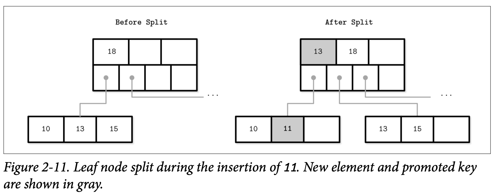
Figure 2-12 展示了在插入元素 11 时造成非叶子节点上的分裂处理。为了处理分裂，我们创建了个新的节点，然后将其中索引从 $N/2+1$ 开始的元素都移过去。分隔点的键则上升到了父节点。

非叶子节点的分裂往往是因为其下级节点的分裂导致的，因为我们需要为其存储多一个指针 (即下一级别中新创建的节点)。如果父节点这个时候也没有足够的空间，则他也会同样发生分裂。
不管是叶子还是非叶子节点分裂都是正常的 (区别只是说该节点包含了 Key 跟对应的 Value 还是只有 Key)，如果是叶子节点分裂了，Key 会跟他相关联的 Value 一起被移到新的节点中。
当分裂完成后，我们有了两个节点，因此需要从中选择正确的那个来继续完成插入操作。所以我们要使用分裂键的不变式，如果插入的 Key 小于被提升的那个，我们将其插入到被分裂的那个节点中，否则的话，我们将他插入到新创建的那个节点。
作为总结，节点的分裂被由以下四步操作完成：
- 创建一个新的节点
- 从原有节点中复制一半元素到新的节点
- 将新的元素放置到对应的节点中
- 在原有节点的父节点中添加一个分裂键跟指针指向新的节点
B-Tree Node Merges
删除操作首先由定位到目标叶子开始，当目标叶子成功定位后，对应的 Key 跟其关联的 Value 将会被删除。
如果被删除节点的邻接节点只有少量的元素 (比如他的使用率小于某个指定的阈值)，则邻接的节点会被合并。这种状况称之为 underflow 下溢。来介绍两个下溢的场景：如果两个相邻的节点属于同一个父节点并且他们的内容能够放到一个节点中，则他们应该被合并；如果他们的内容不能够放到一个节点中，则他们的 Key 会被重新分布，以实现重新平衡。更确切地说，两个节点在满足下面条件时被合并：
- 对于叶子节点：如果节点最多能够保存 N 个键值对，且与相邻节点的键值对个数之和小于等于 N
- 对于非叶子节点：如果节点最多能保存 N + 1 个指针，并且与相邻节点的指针之和小于等于 N + 1
Figure 2-13 展示了在删除元素 16 时发生的合并操作。我们将元素从其中一个邻接节点移到另一个，更一般来说，元素从右邻接节点移到其左边那个，但如果他们的 Key 是预生成的话，也可以使用其他的方法。
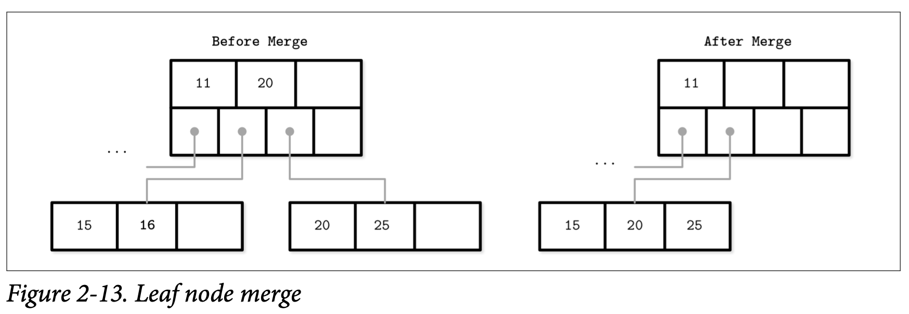
Figure 2-14 展示了在删除元素 10 时两个非叶子节点的合并操作。如果合并后的元素后只需要使用一个节点就可容纳，那我们就只需保留一个节点。在合并非叶子节点时，我们需要从他的父节点中把对应的分裂键拉下来一层。由较低层级节点的删除操作传播上来的的合并操作，可能会导致页被删除，所以对应的指针数会减少一个。跟分裂一样，合并也会往上传播知道根节点。

作为总结，节点的合并由下面三步操作完成，这里我们假设对应的元素已被删除：
- 复制所有右相邻节点的元素到左的节点
- 删除右节点在父节点中中的指针 (在非叶子节点合并时则是下降)
- 删除右节点
在分裂跟合并后有一个需要实现的技术点称为 rebalancing 重平衡，我们会在后续对应的章节讨论。
Summary
在本章中，我们为基于磁盘的存储创建了一个特定的数据结构。二叉查找树跟其有类似的特点，仍有扇出量低、大量分配及更新指针等问题导致其不适合在磁盘中使用。B-Tree 通过增加每个节点的子节点数 (搞扇出) 跟更少平衡操作来解决这些问题。
之后，我们讨论了 B-Tree 内部的数据结构以及查找、插入、删除操作算法的轮廓。分裂跟合并操作帮助我们在新增及删除元素后能够重新构建树以保持其平衡。我们保持了树的高度尽量的低并在仍有空闲空间时将元素添加到已存在的节点中。
我们也可以使用这些方法来创建基于内存的 B-Tree。创建基于磁盘的数据结构，我们需要深入到细节中去了解 B-Tree 在磁盘上的布局，并将数据以基于磁盘的编码格式进行组合。
Futher Reading
你可以从下面的资源来了解更多跟本章概念相关的东西，
Binary search trees
Sedgewick, Robert and Kevin Wayne. 2011. Algorithms (4th Ed.). Boston: Pearson.
Knuth, Donald E. 1997. The Art of Computer Programming, Volume 2 (3rd Ed.): Seminumerical Algorithms. Boston: Addison-Wesley Longman.
Algorithms for splits and merges in B-Trees
Elmasri, Ramez and Shamkant Navathe. 2011. Fundamentals of Database Systems (6th Ed.). Boston: Pearson.
Silberschatz, Abraham, Henry F. Korth, and S. Sudarshan. 2010. Database Sys‐ tems Concepts (6th Ed.). New York: McGraw-Hill.
Summary
在本章中，一开始我们讨论了创建基于磁盘的数据结构的动机。二叉查找树跟 B-Tree 具有类似的复杂度特征，但他并不适用于磁盘，因为他具有较低的扇出量，以及会因为需要保持平衡，导致产生因为对指针进行重定位而产生的更新。B-Tree 通过增加子节点的数量提高了扇出量及减少了保持平衡所需的操作。
在这之后，我们讨论了 B-Tree 内部的结构以及描绘了其查找、插入及更新操作算法的实现。分裂跟合并操作能够重新构建树，以此来来维持因为添加跟删除元素而失去的平衡性。我们保持树始终具有最小化的高度，并在将新数据尽量写入有空闲空间的节点。
我们可以使用这些知识来创建基于内存的 B-Tree。为了完成基于磁盘的实现，我们深入 B-Tree 的节点在磁盘上的布局细节以及使用数据编码格式来构建磁盘的布局。
更多的阅读
如果你希望了解更多本章中所提及的概念，可以从下面引用的文献中了解更多信息
-
Binary search trees
Sedgewick, Robert and Kevin Wayne. 2011. Algorithms (4th Ed.). Boston: Pearson.
Knuth, Donald E. 1997. The Art of Computer Programming, Volume 2 (3rd Ed.): Seminumerical Algorithms. Boston: Addison-Wesley Longman.
-
Algorithms for splits and merges in B-Trees
Elmasri, Ramez and Shamkant Navathe. 2011. Fundamentals of Database Systems (6th Ed.). Boston: Pearson.
Silberschatz, Abraham, Henry F. Korth, and S. Sudarshan. 2010. Database Sys‐ tems Concepts (6th Ed.). New York: McGraw-Hill.
Chapter 2
File Format
在涵盖 B-Tree 的基本语义后，我们现在已经就绪来探讨 B-Tree 跟其他的一些数据结构是如何基于磁盘实现的。访问磁盘的方式跟访问内存是有巨大差异的: 从一个开发人员的角度，内存访问几乎是透明的，得益于虚拟内存的帮助我们无需手动去管理内存的偏移量。磁盘的访问则是使用系统调用的，我们一般需要明确的提供目标文件的偏移量，然后将磁盘上的数据解释为可以用内存访问的形式。
这意味着需要对这个差异了然于胸才能设计出高效的基于磁盘的数据结构。因此，我们首先从容易构建的文件格式开始，然后再修改、再理解。在本章，我们会讨论通用的原则跟实践方式来帮助我们设计所有的基于磁盘的数据结构，而不仅是 B-Tree。
有许多种可能的方式来实现 B-Tree，这里我们还将讨论几个有用的技术。他们的细节可能在实现中会差异很大，但通用的原则基本是一样的。理解 B-Tree 基础的机制，如分裂跟合并是非常重要的，不过只有他们是不足以来做出真正的实现的。这其中还有许多其他的东西需要整合到一起，才能得到我们最终的结果。
基于磁盘的指针管理跟内存中的指针是有很大的区别的，要常常想着把基于磁盘的 B-Tree 当成管理页的机器：算法需要去组合跟导向页。页跟指向他的指针需要进行计算后才能得到其相应的位置。
因为 B-Tree 中大部分复杂的点都来自于其变异性，我们讨论的具体细节就集中在了 page layouts 页面布局、splitting 分裂、relocations 重分配跟其他一些适用于数据结构可变性的概念。在这之后我们会讨论 LSM Trees，我们会专注于排序跟维护因为他们是 LSM 复杂性的来源。
Motivation
创建一个文件格式跟在非托管内存模型的语言中创建一个数据结构是类似的。我们分配一个块然后按照我们想要的方式，使用指定大小的机制跟结构来对其进行切分。当我们想要引用一大块内存或一个不定长的结构时，我们会使用指针。
使用非托管内存模型的语言允许我们自如的分配我们所需的内存 (在合理的边界内) 而无需担心这块内存是否连续、是否有碎片、或是在我们释放它之后会发生什么事。在磁盘中，我们需要自己来小心的处理垃圾回收跟碎片化问题。
数据布局在磁盘中相对于内存要重要得多。为了让基于磁盘的数据结构能够高效，我们需要将数据以能够快速访问的方式进行组织，还要针对特定的持久化存储介质做出考虑，设计出二进制数据的格式，找到高效的序列化及反序列化的方式。
那些使用过低级语言，比如 C 且没有使用额外的库的人会明白其中有哪些限制。数据结构需要预定义其尺寸及明确的进行分配跟释放。手动的实现内存分配跟跟踪是一个巨大的挑战，因为只能对预定义好尺寸的内存块进行操作，我们还需要跟踪哪些块是已经释放的，哪些是还在使用的。
当在内存中存储数据时，大部分的内存布局问题都是不存在、或容易解决的、或可以使用一些第三方库来解决。比如，处理可变长度的字段及超大的数据都是很简单的，因为我们可以直接使用内存分配跟指针，而不需要将他们以某种特殊的方式来布局。不过还是有一些场景是需要开发人员设计特定的内存数据结构来从 CPU 的缓存、预读机制等硬件特性中得到优化的，但这些已经是属于优化目标了。
景观操作系统跟文件系统已经做了许多的事，实现基于磁盘的数据结构仍然需要关注更多的细节跟避开鞥更多的陷阱。
Binary Encoding
为了能在磁盘中高效的存储数据，需要以紧凑的易于序列化跟反序列化的格式进行编码。在讨论二进制格式时可能会经常提到 layout 布局这个词。因为我们没有原始的 malloc 跟 free ，只有 read 跟 write，我们需要考虑以不同的方式来访问跟准备相应的数据。
在这里我们将讨论创建高效页布局的主要原则，这些原则适用于任意的二进制格式：你可以使用类似的指南去创建文件跟序列化格式或者是通信协议。
在我们开始将数据记录组织为页之前，需要先理解如何使用二进制模式来表示对应的 Key 跟数据记录，如果将多个值合并成一个复杂的数据结构，以及如何实现可变长度的类型跟数组。
Primitive Types
Key 跟 Value 都具有指定的类型，比如 integer 整形、date 日期、string 字符串，这些类型都可以表示为 (序列化或者反序列化) 原始的二进制格式。
大部分的数值数据类型都是以固定长度的值来表示的。在处理多需要用多个字节来表示的数值时，要使用同一种 byte-order 字节序来进行编码跟解码。字节序决定了字节的顺序:
-
Big-endian
大端序从最高位的字节开始，然后依次是越来越低位的字节，话句话说，大端具有最小地址。
-
Little-endian
小端序从较低位的字节开始，然后是越来越高位的的字节。
Figure 3-1 的插图描绘了这个概念，这个16 进制的 32位 整数 0xAABBCCDD，AA 是他的最高位，在下面分别以大端跟小端的顺序展示了出来

举个例子，为了使用对应的字节顺序来重组一个 64 位的整数，RocksDB 为特定平台定义了目标平台字节序。如果目标平台的字节序不跟值的字节序不匹配 *(``EncodeFixed64WithEndian函数通过比较对应值跟kLittleEndian的大小)*，他就会使用EndianTransform` 来对字节进行反转，他能够以相反的顺序读取字节数据并将他们添加到结果中。
数据记录由一些基础类型如数字、字符串、布尔值，以及这些值的组合组成。但是，在通过网络传输数据或者将其存储到磁盘时，我们只能将其看为字节的序列。这意味着，为了发送或写入数据记录，我们需要对其进行序列化 (将其转换成可解释的字节序列)，然后在我们接受跟读取数据时，需要将其进行反序列化 (从字节序列转换为原始的数据记录)。
在二进制数据格式中，我们基本都是从用来构建复杂数据结构的基本元素开始。不同的数值类型有不同的尺寸，字节类型是 8 位，短整形是 2 个字节 (16位)，整形是 4 个字节 (32位)，长整形是 8 个字节 (64位)。
浮点型数值 (如 flat 跟 double) 使用 sign 符号位、fraction 分数跟 exponent 指数 来表示。IEEE Standard for Binary Floating-Point Arithmetic (IEEE 754) 标准描述了被广泛接受的浮点数表现形式。一个 32 位的浮点数表示一个精确的数值。举例来说，一个浮点数 $0.15652$ 的二进制表示，我们将它展示在了 Figure 3-2 中。前 23 位表示分数，后续的 8 位表示指数，最后的一位则表示符号位 (即该数值是正数还是负数)。

因为浮点数的值是需要通过分数计算出来的，因此该数值表示的数值只是个近似值。完整讨论该算法已经超出了本书的范围，因此我们只会覆盖了其中基础的部分。
double 能够表示双精度的浮点数。大部分的编程语言都在其标准库中实现了对浮点数的二进制进行编码跟解码。
Strings and Variable-Size Data
所有的基础数值类型都是固定大小的。将他们组合成更复杂结构的方式跟 C 里面的结构体很想。你可以将基础类型组合成结构体并用固定尺寸的数组或指向其他内存区域的指针。
字符串和其他的可变长数据类型 (如固定长度类型的数组) 能够序列化为数值，表示这个数组或字符串的偿付，在该数字之后则是其具体的真实数据。举个字符串的例子，下面的这个表示方式一般称为 UCSD String 或 Pascal String，这个名字来源于一个流行的 Pascal 编程语言的实现，我们可以使用类似下面的伪代码来表示:
String {
size uint_16
data byte[size]
}
一个用来替代 Pascal String 的方法是使用 null-terminated strings 以空字符终结的字符串，对字符串的读取是按照逐个字节进行的，直到最终遇到 end-of-string 字符串结束的符号。Pascal String 的方式有几个有点: 他允许我们用常数时间得到字符串的长度，而无需遍历整个字符串的内容，在具体的编程语言中可以使用传递字节切片及其大小来重新构建字符串。
Bit-Packed Data: Booleans, Enums, and Flags
布尔型可以使用一个单独的字节来表示，也可以使用 1 跟 0 的编码来表示 true 跟 false 。因为布尔类型只会有两种值，因此使用整个字节来表示是比较浪费的，因此开发人员通常会按照 8 的倍数来将多个布尔类型的值打包到一起。每个布尔值只需要使用其中的一位。每一位都能够用来表示来表示该值是否被设置了 (1) 或是未设置或为空 0。
枚举是 enumerated type 枚举类型的简称，他可以用整数来表示并常常以二进制的格式在传输协议中使用。枚举一般用较低的基数来表示，比如使用枚举来编码 B-Tree 的节点类型：
enum NodeType {
ROOT, // 0x00h
INTERNAL, // 0x01h
LEAF // 0x02h
}
另一种类似的概念是 flags 标记，一种用来组合跟打包布尔值跟枚举的类型。标记可以用来表示非互斥的命名布尔参数。比如，我们可以使用标记来表示页面是否包含值的单元，该值是固定长度的还是可变长度的，表示一个页面是否有关联的节点。因为每个位都可以表示一个标记的值，我们可以只使用 2 的倍数作为掩码 (因为 2 的倍数只会有一个位是被设置为 1 的，如 $2^3 == 8 == 1000b, 2^4 == 16 == 0001 0000b$)。
int IS_LEAF_MASK = 0x01h; // bit #1
int VARIABLE_SIZE_VALUES = 0x02h; // bit #2
int HAS_OVERFLOW_PAGES = 0x04h; // bit #3
就像打包后的布尔值，标志使用 bitmasks 位的掩码跟位操作符来执行读取跟写入操作。比如为了打开某个位的设置，我们会使用位操作 OR (|) 跟位掩码来进行操作。也可以使用 bitshift (<<) 移位操作来实现。为了取消某个位，我们可以使用位操作 AND (&) 跟位的取反操作符 (~)。为了测试某个位是否被设置了，我们还可以在指定位跟 0 来执行比较位操作 AND 。
// Set the bit
flags |= HAS_OVERFLOW_PAGES;
flags |= (1 << 2);
// unset the bit
flasg &= ~HAS_OVERFLOW_PAGES;
flasg &= ~(1 << 2);
// Test weather or not the bit is set
is_set = (flags & HAS_OVERFLOW_PAGES) != 0;
is_set = (flags & (1 << 2)) != 0;
General Principles
通常来说，设计文件格式考虑的第一个问题就是怎么实现地址的定位：文件会被拆分为相同大小的不同页，这些也可能会用一个单独的块或是多个连续的块来表示。大部分实现就地更新的存储数据结构的页都会使用相同的尺寸，这样能够明显的简化对数据的读取跟写入。只进行添加的存储数据结构已经常会基于页来进行写入：记录被添加到内存的末端，在内存中的页被填满时才会刷到磁盘上。
这个文件通常会以固定大小的 header 头部信息开始，然后再以固定大小的 trailer 尾部信息结束，他们保存了一些能够快速访问的元信息又或者是用来支持对文件其他部分数据进行解码所需的信息。文件的其他部分会按页进行分割，Figure 3-3 展示了文件的整体结构。

大部分存储数据的表都会有固定的结构、长度、顺序跟字段类型，一个紧凑的结构能节省大量的磁盘空间：我们可以使用字段固定的定位信息来来定位数据，而不是在每条数据中保存每个字段的名称。
如果我们想要设计一个企业员工的记录的格式，用来保存其名称、生日、税号跟性别等信息。实现的方式有许多种，在这里我们将具有固定长度的字段 *(如生日跟税号)*信息保存到数据结构的头部，然后在头部之后保存可变长度的数据。
Fixed-size fields:
| (4 bytes) employee_id |
| (4 bytes) tax_number |
| (3 bytes) date |
| (1 byte) gender |
| (2 bytes) first_name_length |
| (2 bytes) last_name_length |
Variable-size fields:
| (first_name_length bytes) first_name |
| (last_name_length_bytes) last_name |
现在我们可以通过访问头部固定数据之后的 first_name_length 个字节来得到 first_name 字段。 我们可以通过累加 last_name 之前的可变长度字段的大小来得到其地址。为了避免计算过多的字段，我们可以将偏移量跟长度都编码到头部的固定长度区。这样的话就可以单独的定位每个可变长度字段了。
构建更复杂的数据结构通常会需要更多的层次结构: 字段通过基础类型组成，单元由字段组合成，页面由单元组成，扇区由页面组成，区域有扇区组成等等。在这里并没有什么严格的规则是必须要遵守的，所有的定义只取决于你所需的数据结构是怎么样的。
数据库文件通常会分成多个部分，他会通过一个查询表来帮助定位跟指向这些部分在文件头、文件尾或独立文件中的偏移量。
Page Structure
数据库系统将数据记录存储在数据文件跟索引文件中，这些文件被分割成多个具有固定大小的页，这些页的尺寸一般是多个文件系统块的大小，一般来说会在 4 到 16Kb 之间。
接下来我们看一个 B-Tree 节点 节点的例子。从数据结构的角度看，B-Tree 的叶子节点会保存 Key 跟具体的数据记录作为键值对，而非叶子节点则保存 Key 跟指向其他节点的指针信息。每个 B-Tree 的节点都会占用一个或多个连续的页，因此在 B-Tree 的上下文中我们会交替的使用节点、页 (或者还有块) 来表示同一个概念。
原始的 B-Tree 论文描述了一个简单的页结构来保存固定长度的数据记录，这个结构保存一连串的元祖，就如 Figure 3-4 中展示的：Key 缩写为 $k$，关联的 Value 缩写为 $v$，以及指向子页面的指针缩写为 $p$ 。

这种方式很容易理解，但存在一些缺陷：
- 在右侧之外的位置添加数据需要对元素进行定位
- 不允许高效的管理或访问可变长度的记录，只能处理固定长度的数据
Slotted Pages
在存储可变长度的记录时主要的问题来自于对空闲空间的管理：回收已经被删除数据的记录所占用的空间。如果我们尝试将新的大小为 n 的记录放到之前占用空间大小为 m 的位置，除非 $m == n$ 或者可以找到其他大小等于 $m - n$ 的记录，否则部分的空间就被闲置了。类似的，一个大小为 m 的数据段不能够用来保存一个比他还大的尺寸 k，所以最后会选择插入新的数据而不是回收未使用的空间。
为了简化可变长度记录的空间管理，我们将页切分为固定长度的段，但是这样做同时也导致我们也浪费了一部分的空间。加入我们使用大小为 64 个字节的段，除非记录的大小都是 64 的倍数，不然在插入大小为 $n$ 的记录时我们就会浪费 $64 - (n \mod 64)$ 个字节，话句话说，除非记录的大小都是 64 的倍数，否则有些块的大小就只有部分填充了。
空间回收可以使用重新页跟迁移数据记录来实现，但这样我们就需要去维护记录的偏移量了，因为有一些不在本页内的指针可能会使用到这些偏移量。当然，尽量去减少空间的浪费是非常值得的。
总结，我们需要页格式能够支持我们：
- 保存长度可变的记录，以最小化开销
- 在删除记录时能够回收占用的空间
- 对页面中记录的引用不需要去考虑他们具体的位置 (即偏移量？)
为了能够高效的存储如字符串、二进制数据这些长度可变的庞大的对象，我们可以使用称为 slotted page 分槽页 (即页面中有许多的 slot 槽) 或 slot directory 分槽目录 的技术。这项技术被用在了许多数据库中，比如 PostgreSQL。
我们将页组织成一个 slot 或 cell 的集合并且将指针跟 cell 以相反的方向独立的存储在页中不同的存储区。这意味着我们可以通过重新组织指针指向的 cell 来维持其顺序，而且删除记录可以通过将删除指针或将其设为空来实现了。
分槽页有一个固定长度的头部，其中保存了页跟 Cell 相关的重要信息。Cell 可以不同的大小，用来保存与其匹配的数据：键、指针、数据记录。Figure 3-5 展示了分槽页的结构，每个页都会有个成为头部的管理区域，以及 Cell 跟指针。

现在来看看这个方法是如何解决我们开头提到的问题的：
- 最小化开销：带来的唯一的开销是指针数组管理的数据记录的具体位置信息
- 空间回收：空间可以通过对页进行碎片整理跟重写来完成
- 动态布局：对于外部的页来说，通过 Slot 对应的 ID 来建立引用，因此内部具体的偏移量对外部页来说是无感知的
Cell Layout
通过 flags 标志、enums 枚举跟基础类型我们就可以开始设计 Cell 的布局了，然后再使用 Cell 来构建页，最后用页来组成整棵树。在 Cell 级别，我们将它分成 Key 跟 Key-Value 两种 Cell。Key Cell 保存 Key 跟指向页面内对应位置的指针。Key-Value Cell 则保存了 Key 与其关联的数据记录。
我们假设页面内的 Cell 都是均匀的 (举例来说，所有的 Cell 都能够同时保存 Key 或者是同时保存 Key 跟 Value；类似的，所有的 Cell 都可以保存固定长度跟可变长度的数据，但不能同时保存两种)。这意味着我们可以在页的级别上存储描述 Cell 的元数据，而不是记录在每个 Cell 中。
为了构造一个 Key Cell，我们需要知道下面这些信息
- Cell 类型 (可以通过页的元数据得到)
- Key 的大小
- 该 Cell 所指向的子页的 ID
- Key 字节数据
可变长度的 Key Cell 的布局看起来应该像这样 (固定长度的则不需要在 Cell 级别上保存长度信息)
0 4 8
+---------------+--------------+------------+
|[int] key_size |[int] page_id |[bytes] key |
+---------------+--------------+------------+
我们将固定长度的数据字段整合到了一起，然后后面再附加 key_size 个字节。严格意义上来说并不是一定要这样处理，但这样可以帮助我们简化偏移量的计算，因为所有固定长度的字段可以使用静态的、预先算好的偏移量来访问，唯一需要计算偏移量的就只有可变长度部分的数据了。
Key-Value Cell 的话，除了不保存页的 ID，而是换成保存具体的数据记录之外，其他的部分都是类似的
- Cell 类型 (可以通过页的元数据得到)
- Key 的尺寸
- Value 的尺寸
- Key 字节数据
- 数据记录的字节记录
0 1 5 9 .. +key_size
+------------+--------------+----------------+-----------+-------------------+
|[byte]flags |[int]key_size |[int]value_size |[bytes]key |[bytes]data_record |
+------------+--------------+----------------+-----------+-------------------+
你应该注意到了其中偏移量跟页面 ID 的区别。因为页都是固定尺寸并且通过页缓存进行管理的，我们只需要存储页的 ID，在之后就可以通过这个 ID 从查询表中找到真实的偏移量。Cell 的偏移量都是相对于当前页面的起始地址：这让我们可以使用更小的数值来表示偏移量，以此保持结构更紧凑。
Variable-Size Data
在 Cell 中使用固定大小的 Key 跟 Value 并不是必须的。Key 跟 Value 都可以有可变的长度。因为可以依据页的头部大小来算出他们的具体偏移量。
我们可以通过跳过头部然后读取 key_size 个字节来定位 Key，类似的，我们可以通过跳过头部然后再跳过 key_size 个字节后再读取 value_size 个字节来定位 Value。
还有许多其他的方法可以达到一样的目标，比如，通过存储整体大小然后通过减法来计算出 Value 的大小。只要我们有足够的信息来记录对 Cell 的切分，就能够重新构建出所需的数据。
Combining Cells into Slotted Pages
我们可以使用前面讨论过的 slotted pages 分槽页技术来将 Cell 组合成页。我们将 Cell 添加到页的右侧 (从页的尾部开始) 并将 Cell 的偏移量跟指针信息保存到页的左侧，如 Figure 3-6 所示
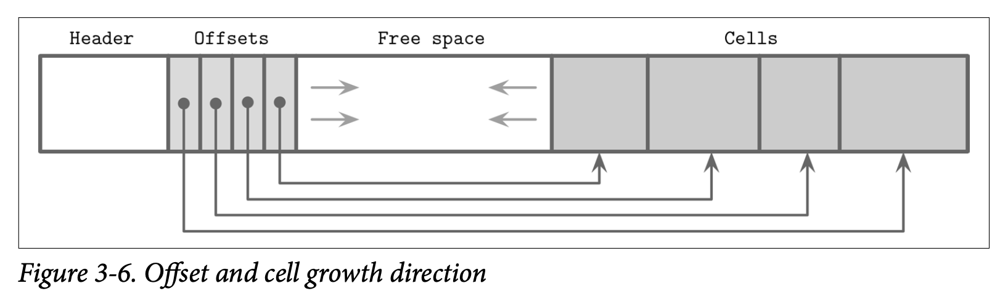
Key 可以以乱序插入页中，然后通过对偏移量指针按照 Key 排序来保持他们的逻辑顺序。这个设计能够以最小的成本来添加新的 Cell，因为在插入、更新或删除 Cell 时不需要对其进行迁移。
现在来看一个保存了名字的页，两个名字被添加进页中，并且他们插入的顺序是先 Tom，然后是 Leslie。如 Figure 3-7 所示，他们的逻辑顺序 (在这里示例中是字母顺序) 跟插入的顺序 (即被添加到页的顺序) 并不一致。Cell 最终按照插入的顺序保存，但其偏移量列表则被重新排序了，用来支持后续的二分查找。

现在我们往这个页来添加多一个名字：Ron。新的数据被添加到较高地址边界的空闲空间中，但 Cell 的偏移量依然会以字符顺序来排列: Leslie、Ron、Tom。为了实现这个目标，我们需要对 Cell 的偏移量进行重新排序: 在插入点之后的之前会被往右边移动一个位置来空出一个位置存放指向 Ron 的新指针，最后的结构如 Figure 3-8 所示。

Managing Variable-Size Data
从页中删除一个元素不需要去删除其对应的 Cell 跟移动其他的 Cell 到空闲的空间，而是将该 Cell 标记为已删除并在内存中使用一个 availability list 来记录空闲的内存跟指向空闲内存的指针。这个 availability list 保存了空闲数据段的偏移量跟他们的大小。在插入新的 Cell 时，首先需要去检查 availability list 是否存在适用的数据段。你可以在 Figure 3-9 中看到带可用段信息的页结构

SQLite 称未被使用的数据段为 freeblocks 并将第一个 freeblock 的指针保存到了页的头部信息中。此外，他还保存了当前可用的总空闲空间大小，用来快速的检查新的元素是否能够在进行碎片整理后保存到该页中。
是否匹配则是基于以下原则：
-
First fit
这可能会带来较大的开销，因为在使用最先匹配原则复用空间后，可能会导致该 Cell 的剩余空间无法被利用，这可能会导致显著的空间浪费
-
Best fit
使用最佳匹配我们会尝试寻找一个插入新数据后，剩余空闲内存最小的 Cell
如果无法找到匹配新 Cell 的连续数据段，但该页中剩余的空闲空间总量却能够容纳新的 Cell，则现在存活的 Cell 会被读取出来然后重新写入来进行碎片整理，以提供空间支撑新的写入操作。如果进行碎片整理后空闲空间总量仍不足以保存新的 Cell，则会创建一个 overflow page 溢出页。
为了提高局部性 (特别是在 Key 都比较小的情况下)，有一些实现会将 Key 跟 Value 独立的保存在叶子中。让所有 Key 保存在一起可以提高查找时的局部性。在定位到查找的 Key 后，会根据其索引来定位到关联的 Value。对于可变长度的 Key，这会要求我们计算跟存储额外的 Cell 指针。
最后的总结，为了简化 B-Tree 的布局，我们假设每个节点都占用一个独立的页。每个页都包含一个固定长度的头部信息、Cell 指针块跟一系列的 Cell。Cell 保存 Key 跟指向子节点或者关联数据记录的指针。B-Tree 使用简单的指针层次结构: 页标识符用来定位子节点在树文件的位置，Cell 的偏移量用来定位 Cell 在页中的位置。
Versioning
数据库系统在开发的过程中不断的演变，持续的添加新特性、修复 Bug 以及解决性能问题。最后的结果就是其二进制文件的格式也不断变化。在大部分时间里，存储引擎的版本需要同时支持不只一种的序列化格式 (比如当前的，跟之前的一种或多种格式，用来保持向后的兼容)。为了提供这个支持，我们需要知道所处理的文件属于哪个版本。
这可以以多种方式来完成，比如，Apache Cassandra 为文件名添加版本信息作为前缀。使用这种方式可以在不打开文件的前提下就知道其版本。在他的 4.0 版本中，数据文件的名字是以 na 作为前缀的，如 na-1-big-Data.db。而其更旧版本的文件则使用了不同的前缀：由 3.0 版本所写的文件使用的是 ma 前缀。
又或者将版本记录到单独的文件中，比如 PostgreSQL 将版本信息记录到 PG_VERSION 文件中。
版本信息还可以直接记录到索引文件的头部中，在这种方式中，头部的部分 (或整个头部信息) 需要使用与版本无关的格式进行编码，然后在确认目标文件的版本信息后，我们可以创建与该版本定义的读取器来处理他的内容。有些文件的格式则使用了某些魔法数字来确认其版本，这种方式我们会在稍后的 Magic Number 中讨论。
Checksumming
在磁盘中的文件可能会因为一些软件上的 Bug 跟硬件失效等问题受到破坏。为了快速定位有问题的文件，避免他们影响到其他的子系统或其他的节点，我们可以使用 checksums 校验和跟 cyclic redundancy checks (CRC)。
有些文献不对加密跟非加密的哈希函数、CRC 以及校验和做出区分，因为他们共同处都是将庞大的数据块转换为一个很小的数字，但他们的使用场景、目标跟保证其实都是不一样的。
校验和提供了最弱的保证，他无法检测出多个位的损坏问题。一般情况下他通过用 XOR 亦或操作跟奇偶校验或者求和计算出来。
CRC 可以检查突发的问题 (比如多个连续的位损坏)，他一般是使用查询表跟多项式除法来实现。多个位的错误对于检测来说至关重要，因为大部分的网络通信错误跟存储硬件错误都是以这种方式出现的。
非加密的哈希函数跟 CRC 不应该用来验证数据是否被篡改，因此你应该始终使用加密的哈希函数来保证安全性。CRC 的主要目的是确保数据没有发生意料之外的变化。这些算法并不是被设计用来防御攻击跟防止数据篡改的。
在将数据写入磁盘之前，我们计算他的校验和然后跟数据一起写入磁盘。当我们将它再次读取回来时，我们会再次对数据计算校验和，并将其与写入磁盘的校验和进行比较。如果两个校验和不匹配，我们就知道发生错误了，因此不应该再使用这份数据了。
对整个文件计算校验和是不大现实的，因为我们并不是每次访问都需要读取整个文件。所以通常会使用页级别的校验和，并将校验和保存在页的头部信息中。使用这个方式的校验和能带来更强的健壮性 (因为我们为各个数据的子集都做了校验)，因此也不会因为单个页发生错误而导致需要丢弃整个文件了。
Summary
在本章中，我们学习了二进制文件的组织：如果序列化基础的数据类型，将他们组合成 Cell，并用 Cell 来构建 Slotted Page 及在这些数据结构中进行导航。
我们还学到如何处理可变长度的数据类型，如字符串、字节序列跟数组，以及如何处理包含了这些可变长度数据的Cell。
我们讨论了 slotted page 分槽页的格式，他让我们可以在外部的页使用 Cell ID 来引用单独的 Cell，按照插入的顺序来保存数据，并按照 Key 的顺序来排序这些 Cell 的偏移量。
这些原则可以使用在大部分的基于磁盘的二进制格式跟网络协议中。
更多的阅读
如果你希望了解更多本章中所提及的概念，可以从下面引用的文献中了解更多信息
-
File organization techniques
Folk, Michael J., Greg Riccardi, and Bill Zoellick. 1997. File Structures: An Object- Oriented Approach with C++ (3rd Ed.). Boston: Addison-Wesley Longman.
Giampaolo, Dominic. 1998. Practical File System Design with the Be File System (1st Ed.). San Francisco: Morgan Kaufmann.
Vitter, Jeffrey Scott. 2008. “Algorithms and data structures for external memory.” Foundations and Trends in Theoretical Computer Science 2, no. 4 (January): 305-474. https://doi.org/10.1561/0400000014.
Chapter 4
Implementing B-Trees
在上一章中，我们讨论了二进制格式的构成，以及了解到了如何创建 Cell、构建对应的层级结构以及通过指针来将各个页连接起来。这些概念同时适用于就地更新及只有添加操作的两种类型的存储结构。在本章，我们会针对性的讨论关于 B-Tree 的概念。
我们将本章按照逻辑分为三部分，第一部分我们会讨论组织：如何创建 Key 跟指针的联系，以及如何实现页的头部信息跟页之间的链接信息。
紧接着我们讨论从根到叶子节点下降过程的处理，如何实现二分查找及如何收集信息及如何在分裂跟合并操作中保持对父节点的跟踪。
最后，我们会讨论一些优化技术 (重新平衡、right-only appends 只限右侧添加操作跟 bulk loading 批量读取)，管理操作以及垃圾回收。
Page Header
页的头部信息保存了用来进行数据导航、管理跟优化相关的信息。通常情况下会包含一个用来描述页内容跟布局类型的 flags 标志，页中所具有的 Cell 数量，空闲空间的高位及低位的偏移量 (用来 Cell 跟数据) 以及其他有用的元数据。
比如 PostgreSQL 则将页的大小及布局版本保存到了头信息中，在 MySQL 的 InnoDB 中，页的头部还包含了数据记录的数量、级别跟其他实现所需的值，在 SQLite 中，页的头部保存了 Cell 的数量以及当前最右位置的指针。
Magic Numbers
我们经常会将一个称为 magic number 魔法数字的值写到文件或是页的头部中，他通常是多个字节组成的块，其中包含一个可以用来标记的常量，比如用来表示页中的块，说明其类型，或确认其版本。
魔法数字常常被用来验证跟做正确性检查。确认魔法数字的正确性对偏移量的计算是非常重要的，如果该数字是正确的，那其中偏移量正确的可能性是很高的。比如为了验证页面被正确的读取跟对齐，在写入数据时我们会将魔法数字 50 41 47 45 (Page 的16进制) 写到头部，之后再读取的时候，我们通过验证头部信息是否有我们预期的字节数据来确认页的合法性。
Sibling LInks
有一些实现会保存向前及向后的连接，用来指向其左边跟右边的相邻页。这些链接能够帮助我们快速定位相邻的节点，而无需上升到父节点再进行查找。这个方式同样也添加了分裂及合并操作的复杂度，因为发生对应操作时需要更新相关邻接页的偏移量。比如，当一个非最右的节点分裂了，他的有邻接节点的向后的指针需要指向新创建的节点。
在 Figure 4-1 中你可以看到为了定位相邻的节点，除非我们建立了相邻节点的链接，否则的话就会需要通过父节点来进行查找。这个操作可能会一直上升到根节点才能完成，因为直接的父节点可能只指向了自己的子节点。如果在头部信息中存储了相邻节点的连接，可以简单的使用他们来定位到同一级别的上一个或下一个节点了。
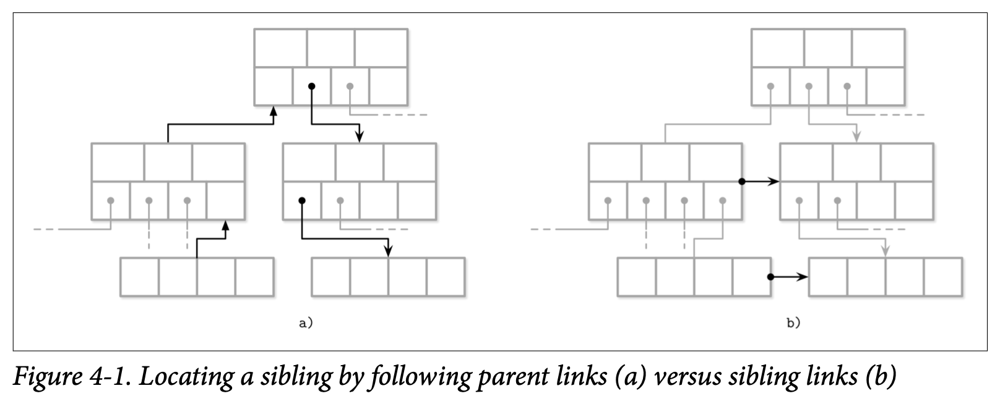
存储相邻节点连接的一个缺点是需要在分裂跟合并的时候去更新他们。因为需要更新相邻的节点，而不只是在分裂跟合并的节点，因此可能会需要额外的锁定机制。在后续的 Blink-Tree 章节中我们会讨论相邻节点的连接在并行的 B-Tree 实现中的用处。
Rightmost Pointers
B-Tree 的分隔键具有严格的不变性：他们被用来将树分割成子树及作为子树的导航，因此永远会多出一个指向子页的指针。这也是为什么 Counting Keys 中会说 +1。
在 Separator Keys 分隔键中我们讨论了分隔键的不变性。在许多的视线中，节点跟 Figure 4-2 所示的更像：每个分隔键都有子节点的指针，但其最后一个指针是单独存储的，因为他并不会跟其他的 Key 成组，你可以用他跟 Figure 2-10 做一下比较。
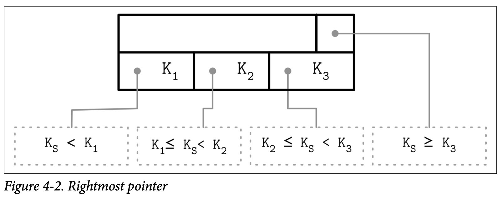
这个额外的指针可以存储在头部中，比如像 SQLite 就是这样做的。
如果最右的子节点被分裂出了新的节点，并添加到了父节点上，此时最右的子节点就需要被重新赋值了。如 Figure 4-3 所示，在分裂之后， 被添加到父节点的 Cell (灰色的那个) 保存了被提升的 Key 及指针。指向新节点的指针会用来替换掉原本的最后节点指针。相同的方式在 SQLite 中都会有人讨论。

Node High Keys
我可以使用一种稍微不同的方式，将最右节点的指针保存到位于 Cell 之后一个称为 high key 的节点中。high key 表示当前节点的子树所能表示的最大的 Key。这种方式被 PostgreSQL 使用，并将其命名为 B^link^-Trees (这种方式对并发的影响可以查看具体的 Blink-Tree 章节)。
B-Tree 有 N 个 Key (缩写为 $K_i$) 以及 N+1 个指针 (缩写为 $P_i$)。在每个子树中，Key 的边界使用 $K_{i-1} <= K_s < K_i$ 来表示，并且隐含着 $K_0 = -\infty$，这些都不会直接的在节点上表现。
B^link^-Tree 为每个节点添加了 K~N+1~，他表示了指针 P~N~ 指向的子树中能够存储的 Key 的上限。因此也是能够存储在该子树的值的上限。Figure 4-4 分别展示了两种方式：(a) 展示了不包含 high key 的节点，(b) 展示了包含 high key 的节点。

在这个场景指针会成对的存储，并且每个 Cell 都会有其对应的指针，这能够简化跟减少处理 rightmost 指针时的边界条件。
在 Figure 4-5 中，你可以看到两种方式的页面结构示例，以及他们的搜索空间在这些场景中是如何被分割的：第一种使用了 $+\infty$ 表示上限，第二种则使用了 $K_3$ 作为上限。

Overflow Pages
节点的大小跟树的扇出量是固定并且不能够动态变更的。我们很难得出一个通用的优化方案：如果可变长度的 Value 足够大，那一个页就只能保存少数几个；如果 Value 足够小，又会造成较多的空间被浪费。
B-Tree 的算法指定了每个节点应该保存指定数量的元素。因为有些 Value 的大小是不同的，我们可能会遇到这样的情况：根据 B-Tree 算法的定义，节点可能未被填满，但该固定大小的页却已经没有足够的空闲空间来该节点了。重新设定该页面的大小的话，会导致页面中已经写入的数据需要移动到新的区域，这是不大现实的。因此，我们需要一种方式能够去增大或是扩展页的大小。
为了实现无需复制数据到新的连续区域的动态长度节点，我们可以将节点构建为多个连接的页。比如默认的页尺寸是 4K，在插入一些数据之后，他的数据已经超过了 4K。我们允许节点以 4K 为基数增长，而不是只将大小固定为 4K，所以分配了大小为 4K 的扩展页并将其连接到原本的页面后。这些建立的扩展页称为 overflow pages 溢出页，更明确一点，在本节的后续我们称原本的页为 primary page。
大部分 B-Tree 的实现最多只允许在节点中保存其节点大小的数据，并将剩余部分的数据保存到溢出页。这个值通过用节点的大小除以扇出量得到。使用这种方式，我们就不会再遇到页空间不够使用的情形了，因为页至少会有 max_payload_size 个字节。更多关于 SQLite 中溢出页的细节可以参考 SQLIte source code repository； 也可以从 MySQL InnoDB 的文档 中找到。
在插入数据的大小超过了 max_payload_size 时，会检查他是否已经有了关联的溢出页，如果溢出页已存在并且具有足够的空间，则超出部分的数据会被保存到溢出页中。否则将分配新的溢出页。
在 Figure 4-6 中，可以看到 primary page 跟 overflow page ，以及 primary page 的记录中会包含指向溢出页中对应溢出数据的指针。

溢出页需要一些额外的簿记信息，因为他们可能会跟 primary page 一样产生碎片问题，所以我们回收他的空间用来写入数据，或是在不需要时丢弃整个溢出页。
当第一个溢出页被创建时，他的页 ID 会被保存到 primary page 的头部信息中。如果一个溢出页不够用，那这些溢出页将会通过在他们各自的头部信息保存其前一个溢出页的 ID 来建立连接。因此可能需要遍历多个溢出页才能够定位到想要的溢出数据。
因为 Key 通常具有较高的基数，将他们保存到一起让大部分的比较在 primary page 中完成。
对于数据记录，则需要定位出他们溢出部分在溢出页的位置，才能读取出来返回给用户。但是这一部分并不是非常重要，因为类似操作的频率并不是很高。如果所有的数据记录都溢出了，那更应该考虑使用专门的 blob 存储来保存这些大的数据。
Binary Search
我们已经在 B-Tree Lookup Algorithm 中讨论过 B-Tree 的查找算法，并提过我们会通过 binary search 二分查找算法来定位目标 Key。二分查找只能在有序的数据中使用，如果 Key 是无序的则无法使用二分查找。这也是为什么保持 Key 有序跟维护有序的不变性这么重要。
二分查找算法接收一个有序的数组及需要查找的 Key 最终返回一个数字，当该数字是一个正数时，我们知道他表示的是查找的 Key 在数组中的位置。当该数字是一个负数时意味着查找的 Key 并存在于数组中，同时这也代表了一个 insertion point 插入位置。
插入位置表示的是数组中第一个大于查找 Key 的元素的位置。这个数字的绝对值代表查找的 Key 能够在不影响数组顺序的前提下进行插入的索引位置。插入操作可以从插入位置开始，向右以后其之后的元素来得到一个存放新元素的空位。
在较高层级的搜索中一般不会得到完全匹配的结果，我们感兴趣的是搜索的方向，即找到第一个大于我们查找 Key 的位置，并依据他来找到我们需要继续下降进行查找的子树。
Binary Search with Indirection Pointers
B-Tree 页中的 Cell 是按照插入的顺序保存到 ，只有 Cell 的偏移量会保持逻辑上的顺序性。为了在 Cell 中使用二分查找，我们选择中间 Cell 的偏移量，通过指针定位到具体的 Cell，比较查找的 Key 跟 Cell 中的 Key 来确定下一个需要进行查找的位置是在当前 Cell 的左侧还是右侧，然后继续递归的进行相同的处理，知道找到查找 Key 对应的插入位置。如 Figure 4-7

Propagating Splits and Merges
正如我们在前面的章节中讨论的，B-Tree 的分裂跟合并会被上升到更高的层级。为此我们需要能够从分裂的叶子或合并的节点中一直上升到根节点。
B-Tree 的节点可以包含指向父节点的指针，但因为较低层级的页总是从较高的层级的引用中被加载的，因此没有将该信息持久化到磁盘的必要。
如邻接节点的指针，父节点的指针也需要在父节点发生变化时进行更新。这种情况会发生在具有页面标识的分隔键被转移时发生：如父节点分裂、合并或重平衡了。
有一些实现 (如 WiredTiger) 使用父节点的指针用于遍历叶子来避免在使用邻接节点指针时可能发生的死锁。因为使用了父节点指针而不是邻接节点指针来遍历叶子节点，遍历的过程看起来更接近与 Figure 4-1。
为了定位邻接节点，我们可以跟随父节点的指针上升后再递归的下降到较低的层级。当我们遍历到父节点的最后一个邻接节点后，查找会继续递归的上升，直到回到根节点，然后再继续下降到叶子层级。
Breadcrumbs
相对于在节点中保存跟管理父节点的指针，我们可以记录找到叶子节点过程中所遍历的节点列表，然后在插入导致分裂或删除导致合并时，能够按照节点列表的相反顺序来得到所需父节点。
在可能导致 B-Tree 的结构产生变化的操作中 (插入或删除) ，我们首先会从根节点开始遍历直到找到目标的叶子节点跟所需的插入位置，因为我们并不知道执行的操作何时会导致分裂或者合并 (至少在定位到目标叶子节点前是不知道的)，所以需要收集这些 breadcrumbs 导航信息。
导航信息包含了在分裂或合并发生时，从当前叶子节点上升到根节点所需的引用信息。跟这个信息最匹配的数据结构是 stack 栈，比如 PostgreSQL 就使用了栈，在其内部则称为 BTStack。
如果节点需要分裂或合并，导航信息可以用来找到 Key 上升到父节点所需的插入位置，以及在需要时可以用来找到需要继续上升的更高层级的节点。这个栈是在内存中进行管理的。
Figure 4-8 展示了一个从根节点遍历到叶子节点的例子，收集的导航信息包含了遍历中遇到的节点跟其 Cell 的索引。如果目标的叶子节点分裂了，则栈顶的元素会被弹出用于定位叶子节点的父节点。如果父节点有足够的空间，则新的 Cell 会被添加到该栈顶元素保存的插入位置 (假设该索引位置是有效的) 中；否则父节点也会触发分裂。这个处理的过程会持续递归直到导航信息的栈为空，此时说明我们已经到了根节点了，又或者遇到了无需分裂的上级节点。

Rebalancing
有些 B-Tree 的实现会在执行分裂或者合并前，尝试通过 rebalacing 重平衡层级内的元素或者将使用率高的节点中的元素移动到使用率低的节点中来分摊分裂跟合并操作的成本。这有助于提高节点的使用率，并使用有可能花费更高管理成本的重平衡来降低树的高度。
插入以及删除的操作中也有机会来维持树的负载平衡。为了提高空间使用率，在节点溢出的时候，不会马上将节点分裂，我们会将节点中的部分元素移动到相邻的节点，以此来为插入提供空间。同样的，在删除时，与其马上对节点进行分裂，我们可以选择移动部分相邻节点中的元素到当前节点，来保证当前节点起码是半满的状态。
$B^\star-Tree$ 会保持数据分布在相邻的节点直到相邻的节点都填满，接着他不是将节点分裂成两个半满的节点，而是将两个节点分裂成三个节点，这三个节点都保持了 $\frac{2}{3}$ 的使用率，SQLite 就使用了这种方式。这种方式提高了平均使用率，因此降低了分裂的可能性，但同时也带来了额外的跟踪及维持平衡的逻辑。更高的使用率同时也意味着更高效的查找，因为这样能保持树有尽量低的高度，跟查询到叶子时能够遍历尽可能少的页。
Figure 4-9 展示了数据在邻接节点的分布，当左节点的元素数量比右节点要多时，元素会从使用率较高的节点移动到使用率较低的节点。因为在相邻的节点中最大最小不变式在平衡中会改变，所以我们还要去更新父节点相关的 Key来保证其正确性。

负载均衡是一种已经在很多数据库实现中使用的技术，举例来说，SQLite 实现了跟我们刚刚讨论的非常类似的 balance-siblings algorithm 算法。保持均衡可能会为代码带来一些复杂度，但是因为他的场景是独立的，所以可以在后续的阶段作为优化来实现。
Right-Only Appends
许多的数据库系统使用单调递增的值来作为主要索引的 Key，这为优化提供了一个机会，因为所有的插入操作都会发生在索引的末端 (即最右子节点)，所以大部分的分裂也都只会发生在每一个层级的最右端。此外，因为 Key 是单调递增的，假定删除跟删除操作的比例比较低，所以非叶子节点相对于随机的无序 Key 来说会产生更少的碎片。
PostgreSQL 将这种场景称为 faskpath。当插入的 Key 严格大于最右测的页的第一个 Key 且左右侧的页有足够的空间来保存新插入的实体时，新的实体会被直接插入到已缓存的最右侧叶子节点中，因此插入操作可以完全跳过对树路径的读取。
SQLite 也有类似的称为 quickbalance 的概念，当插入的实体足够靠右的一侧并且目标节点是满的 (即称为整棵树中最大的实体)，他并不会触发重平衡或分裂节点的操作，而是会分配一个新的最右侧节点，并为父节点添加指向他的指针。 (SQLite 更多实现平衡的方式可以参考 Rebalancing 章节) 尽管这个新添加的页几乎处于空的状态 (相对于分裂产生的半满节点来说)，但他很有可能会很快的又被填满了。
Bulk Loading
如果我们有预先排好序的数据并且想进行批量的读取，或者需要重新构建树时 (比如进行碎片整理)，可以从 Right-Only Append 的想法中走的更远一点。因为要保存到树中的数据已经是有序的，在批量读取时我们只需要将数据添加到树的最右侧的位置。
在这个场景，我们可以完全避免分裂跟合并，使用自底向上，逐层写入或在当前层有足够的指针数时马上写入其上层节点的方式来构建整棵树。
其中一个实现批量读取的方法是将预先排好序的数据逐页写入叶子节点 (而不是单独的逐个插入元素)。在写完所有的叶子节点后，我们将他的第一个 Key 上升到父节点，然后使用常规的方法来构建更层次的级别。因为添加的 Key 是有序的，所有的分裂操作都只会发生在最右侧节点。
因为 B-Tree 始终是从最底层 (叶子层) 进行构建的，所以可以在构建任何更高级别的节点前完成所有叶子节点。让让我们可以在构建更高级别的节点前，先持有所有叶子的指针信息。这种方式的优点是我们不需要处理任何基于磁盘的分裂跟合并操作。与此同时，只需要在内存中保存当前需要的跟树相关的最少信息 (比如当前填充中叶子节点的所有的父节点) 。
不可变的 B-Tree 可以用相同的方式来构建，但是，跟可变的 B-Tree 不同的地方在于，他不需要额外的空间开销来处理后续的修改操作，因为现在对树的所有操作都是最终的版本。所有的页可以完全的填满，提高使用率并带来更高的性能。
Compression
存储原始未压缩的数据可能会产生大量的开销，因此许多的数据库都提供了压缩数据用来节省空间的方法。这里有一个需要对访问速度跟压缩率需要作出权衡的点：更高压缩率能更好的减少数据大小，允许我们在单次访问中读取到更多的数据，但可能会导致需要更多的内存及 CPU 来对数据进行压缩跟解压。
压缩可以使用不同级别的粒度来完成，尽管对整个文件进行压缩可以得到更好的压缩率，但同时限制了程序需要在发生更新时对整个文件重新进行压缩，因此更细粒度的压缩对大型的数据集来说更合适。对整个索引文件进行压缩是不现实并且很难做到高效的：为了定位一个特定的页，需要访问整个文件 (或者是包含了被压缩元数据的段，来定位被压缩了的数据) ，解压，使其可用。
一个替代方案是按页来压缩数据。这很匹配我们所讨论的内容，因为我们所讨论的算法一直都是使用固定大小的页的。页能够独立的进行压缩跟解压，因此可以将压缩跟页的读取跟写入结合在一起。然而，在这个案例中因为对页进行压缩会导致页只占了磁盘块的一部分，但数据的传输单元又是基于磁盘块的，所以可能有需要对页的额外部分进行填充。在 Figure 4-10 中，你看看到压缩后的页 (a) 占用了少于一个磁盘块的空间，当我们读取这个页时会同时把属于其他页的数据也加载了。而对于跨越了多个磁盘块 (如 b) 的页，则会导致我们需要读取额外的块。

另一种方式是指对数据进行压缩，比如基于行 (压缩整个数据记录) 或是基于列 (独立的压缩每个列)，在这种做法中，页的管理跟压缩是被解耦的。
在写这本书时，大部分开源的数据库都提供了可插拔的压缩方法，可用的压缩库包括如 Snappy、zLib、lz4 等等。
因为压缩算法的效果是依赖于数据集及其他潜在因素 (如压缩率、性能或内存开销) 的，我们不会深入对他们的进行比较跟实现细节。已经有许多针对不同压缩算法对不同块的尺寸压缩效果的比较 (如 Squal Compression Benchmark)，他们一般关注四个指标：内存负载、压缩性能、解压性能跟压缩率。这些指标对于如何选择压缩库是非常重要的。
Vacuum and Maintenance
到目前为止我们讨论的大部分都是 B-Tree 面向用户的操作。只是这里还有其他的操作在查询是同时发生的，如管理存储的完整性，回收控件，减少开销，以及保持页有序。在后台中处理这些操作让我们可以节约时间并且避免在插入、更新跟删除中产生额外开销。
之前介绍的 Slotted Pages 分槽页需要我们对页进行维护以让其保持良好的状态。比如在一系列对内部节点的分裂跟合并或者对叶子节点的插入、更新跟删除操作可能会导致页有充足的 logical 逻辑空间但却没有足够的 contigunous 连续空间，因此该页面是碎片化的。Figure 4-11 展示了这个状况: 页面仍有一些逻辑空间可用，但他们是碎片化的，被两个已删除的记录及从头部开始的空闲控件分割开。
B-Tree 是从根节点的层级开始往下遍历的，数据记录可以通过跟随从根节点开始，仍 live 存活 (可定位) 的指针下降找到。无法定位的数据记录则需要被垃圾回收: 这些数据记录已经不再被其他节点引用并且已经不会在被读取，所以他们的内容是无效的。
你同样可以在 Figure 4-11 中看到其差别：不像那些已经被删除或重写的区域，其他的节点仍然可以持有指向 Cell 的指针并进行读取。大部分实现都会因为关注性能而不去用 Zero 零数据来填充垃圾区域，因为他们最终还是会被其他的数据重写的。
Fragmentation Caused by Updates and Deletes
接下来考虑在什么情况下页会进入一个奇怪的状态：无法被读取但又需要对其进行压缩。在叶子层级，删除操作只会从 Header 中移除对应 Cell 的偏移量，该 Cell 本身其实仍然存在。在这个操作之后，被删除的 Cell 已经是无法被读取的了，他的内容不会再出现在任何的查询结果中，因此清空其内容或移动邻接的节点是没有必要的。
在页被分裂时，只有偏移量被处理 *(缩短)*了，并且因为页的其余部分都是无法读取的，位于最终偏移量之后的 Cell 也不能再被读取了，所以这些 Cell 最终会被新写入的数据覆盖，或者在 Vacuum 处理中被垃圾回收了。
有一些数据库会依赖于垃圾回收，并将已删除或已被更新过的 Cell 保留在原地来支持多版本并行控制。Cell 在更新完成之前，在并行执行的事务中仍是可以被访问到的，并能在其他线程访问到他们的时候被尽快的回收。有些数据库通过管理一些结构来跟踪这些 ghost 幽灵记录，他们会在能看到他们的事务完成时被尽快的回收。
因为删除只会丢弃 Cell 的偏移量而不会重新移动剩余的 Cell 或是在物理上释放该 Cell 的空间，释放的控件最终可能会散落在页的各个位置。这种情况我们称该页是 fragmented 碎片化的，需要对其进行 defragmentation 碎片整理。
为了执行一个写入，我们通常需要能够匹配对应 Cell 的包含了空闲空间的连续的块。为了将释放的数据段存放在一起来解决这个问题，我们需要重写这整个页。
插入操作将数据组合按照插入的顺序保存，这不会产生什么明显的影响，但自然有序的数据元祖能在顺序读时提供更好的预读支持。
更新通常只会发生在叶子层级的节点上: 内部页的 Key 只会用来作为节点的导航支持跟只用来定义子树的边界。另外，更新会为每个 Key 独立执行，而且一般不会导致树的数据结构发生变化，除非产生了创建溢出页的操作。在叶子层级，更新的操作不会变更 Cell 的顺序跟尝试重写整个页。这意味着 Cell 的多个版本可能会被保存起来，尽管只有一个是可以被定位的。
Page Defragmentation
这个负责回收空间、重写页的操作被称为 compaction 压缩、vacuum 真空或直接是 maintenance 维护。如果没有多余的物理空间了，页的重写可以通过同步的写来实现 (避免创建不必要的溢出页) ，但压缩更多是使用了与之不同的异步处理来遍历所有的页，并对其应用垃圾回收及重写他们的内容。
这个操作通过回收了那些无法访问的 Cell 来清理空间，并按照逻辑顺序来重写 Cell。当页被重写后，Cell 可能会被移动到文件中的不同位置上。内存中未使用的页则会变为可用的并回到页缓存中，磁盘中新的可用的页的 ID 会被添加到 free page list 空闲页列表 (有时也叫 freelist)。这个信息会被持久化到磁盘，保证空闲的空间在节点崩溃或重启时不会丢失。
Summary
本章中我们讨论了基于磁盘实现的 B-Tree 的特定的概念，如
-
Page header
页的头部信息通常用来存储元数据
-
Rightmost pointers
不与分隔键成对的指针，以及如何对其进行处理
-
High keys
用来确认节点中能够存储的最大的 Key
-
Overflow pages
溢出页让我们可以存储尺寸大于固定页大小的可变长度记录
在这些之后，我们还有一些关于从根下降到叶子节点的讨论
- 如何使用间接指针来应用二分查找
- 如何通过父节点指针或是导航信息来跟踪树的层级结构
最后，还讨论跟优化及维护相关的技术
-
Rebalancing
移动相邻节点的元素来减少分裂跟合并的次数
-
Right-only appends
在某些假设中，不进行分裂，而是将新 Cell 添加到页的最右侧能够快速的填充数据
-
Bulk loading
一个使用将有序数据来高效构建 B-Tree 的技术。
-
Garbage collection
处理页重写，将 Cell 变为以 Key 同序，跟回收不可用 Cell 的技术。
这些概念构建了基础的 B-Tree 算法与真实实现之间的桥梁，帮助我们更好的理解基于 B-Tree 的存储系统是如何工作的。
更多的阅读
如果你希望了解更多本章中所提及的概念，可以从下面引用的文献中了解更多信息
-
Disk-based B-Trees
Graefe, Goetz. 2011. “Modern B-Tree Techniques.” Foundations and Trends in Databases 3, no. 4 (April): 203-402. https://doi.org/10.1561/1900000028.
Healey, Christopher G. 2016. Disk-Based Algorithms for Big Data (1st Ed.). Boca Raton: CRC Press.
Chapter 5
Transaction Processing and Recovery
本书是以自底向上的方式来介绍数据库系统概念的：我们首先学习了跟存储相关的数据结构信息，直到现在，我们已经准备好开始学习数据库系统中更高层次的负责缓冲管理、锁管理跟恢复相关的组件。了解这些组件是我们理解数据库事务的先决条件。
transaction 事务是数据库系统中一个不可分割的逻辑工作单元，他允许我们将多个操作表现为一个独立的步骤。在事务中可以执行数据记录的读取及写入操作。一个数据库的事务需要保证 atomicity 原子性、consistency 一致性、isolation 隔离性及 durability 持久性。这几个属性通常被称为 ACID。
-
Atomicity
事务的步骤是不可分割的，这意味着事务中的所有操作要么就全部执行成功，要么就一个都不能执行。换句话说，事务不会被部分的执行。每个事务可以被 commit 提交 (使所有事务中产生的，因为写操作而产生的变更可见) 或 abort 终止*(回滚事务中所有尚未可见的所有副作用)*。提交是一个最终操作，在中断之后，事务可以被重试。
-
Consistency
一致性是特定于应用的保证；一个事务应该只会将数据库从一个有效的状态转移到另一个有效的状态，维持好所有数据库的不变性 (比如约束性、完整性等)。一致性是定义最不明确的属性，可能是因为他是唯一由用户而不是有数据库系统控制的属性。
-
Isolation
多个并行执行的事务应该是互不影响的，就如同只有一个事务在执行一般。隔离性定义了对数据库状态的变更 when 合时是可见的，以及哪些变更对于其他并行中的事务是可见的。出于性能考虑，大部分的数据库都使用了弱于隔离性定义的 isolation level 隔离级别。根据并发控制的方法跟方式不同，事务中所作的变更对于其他并发执行的事务来说可能是可见也可能是不可见的。
-
Durability
当一个事务被提交后，他对数据库状态所作的所有变更需要被持久化到磁盘中，并不受类似断电、系统失效跟崩溃等故障的影响。
在数据库系统中实现事务不只需要使用存储殷勤来组织跟持久化数据到磁盘，还需要一些其他的组件协同工作。对于节点本地的事务来说，需要 trasaction manager 事务管理器来协调、调度来跟踪事务及其各个步骤。
Lock manager 锁管理器保护各种资源防止在并行访问的情况下破坏数据的完整性。当请求一个锁时没锁管理器检查是否已经有其他的事务已共享或互斥的方式持有了该锁，并在不违反当前访问级别规则的前提下授予该锁的访问权限。因为排他锁在同一时刻最多只能够给一个事务持有，如果这时有事务请求该锁，则他必须等到当前事务释放该锁、或者终止并在稍后重试。在锁被释放或是事务终止后，锁管理器会马上通知其他在等待该锁的事务，让他们能够尝试获取锁好继续执行。
Page cache 页缓存作为持久化存储 (磁盘) 跟其他存储引擎之间的代理，他会将未被同步到持久化存储的页的变化暂存起来。所有数据库状态的变化都会首先被应用到页缓存中。
Log manager 日志管理器保存了所有已经应用到页缓存但还未被同步到持久化存储的操作历史 (以日志条目的形式)，保证他们不会因为因为崩溃而丢失。话句话说，日志会在在启动时用来重新执行操作及重新构建缓存状态。日志的条目同时还可以用来支持事务终止时的回滚操作。
分布式的事务需要额外的协调者跟远程执行器，我们会在 Chapter 13 在讨论分布式事务的协议。
Buffer Management
大部分的数据库使用了 two-level 两级的存储层次结构：较慢的持久化存储 (磁盘) 跟较快的主存 (内存)。为了减少访问持久化存储的次数，页信息会被缓存在内存中，当存储层再次请求已缓存的页时，会直接返回缓存中的副本。
缓存中的页能够被重用的前提是，我们假设了没有其他的程序会去修改磁盘中的数据。这种做法有时候也被称为 virtual disk 虚拟磁盘。虚拟磁盘只会在目标页在在内存中没有可用的副本时去访问物理存储设备。这个概念的另一个更常用的名字是 page chae 页缓存或 buffer pool 缓冲池。页缓存负责缓存从磁盘中读取出来的页，在数据库系统崩溃或没正确关闭时，缓存的内容将会丢失。
因为页缓存这个词能够更好的体现这个数据结构的目标，因此本书中我们会一直沿用这个名字。另一个缓存池听起来更像是一个用来重用那些空缓存的池，而不是用来共享其内容，共享内容可能是页缓存很重要的一部分，甚至可以是一个独立的组件，但这个名字却完全没有反映出这个目的。
需要对页进行缓存的问题并不局限在数据库这个领域。操作系统也有关于页缓存的概念。操作成系统利用未使用的内存段来透明的缓存磁盘内容，并以此来提高 I/O 系统调用的性能。
我们称从磁盘加载未缓存的页面的操作为 paged in。如果一个缓存的页产生了任何的修改，在修改被写回磁盘之前，我们称其为 dirty 脏页。
因为用来建立缓存的内存区域中的通常都是远小于整个数据集的，因此页缓存最终会被填满，为了能够缓存一个新的页，则必然会有一个已缓存的页会被从缓存中 evicted 驱逐。
在 Figure 5-1 中，你可以看到 B-Tree 的逻辑表示中页、缓存页的版本及页在磁盘中的区别。页缓存从无序的将页缓存到 free slot 空槽中，因此缓存中的顺序并没有直接跟磁盘的保持一致。

缓存也的主要功能可以总结为：
- 保持缓存的页面在内存中
- 能够将页面的修改集中缓存起来并进行应用
- 当请求的页不存在于内存且还有足够的空间时，页面会被 paged in 到页缓存中，然后返回该页的一个缓存副本
- 如果请求一个已被缓存的页，则会直接返回已缓存的版本>
- 如果已经没有足够的空间来容纳一个新页，有一些页会被驱逐去页缓存并将其内容写入到磁盘中
Bypassing the Kernel Page Cache
大部分的数据库系统会在打开文件时使用 O_DIRECT 标志，这个标志可以用来绕过内核层级的缓存，并直接的访问磁盘，然后使用数据库中特定的缓存组件，这个操作有时候会被开发操作的人进行直接司改。
Linus Torvalds 批评了 O_DIRECT 的用法，因为他不是异步的也没有预读或任何能够指示给内核的访问模式信息。然而，在操作系统能够提供更好的机制之前， O_DIRECT 仍让是非常实用的。
我们可以通过 fadvise 来给予操作系统如何进行页面驱逐的建议，但我们能做的也只有向内核提出我们的建议，内核对此并没有任何具体的保证。为了在对 IO 进行操作时避免系统调用，我们可以使用 memory mapping 内存映射，但这样我们就失去了对缓存的控制了。
Caching Semantics
所有对缓存所作的修改会一直保留在内存中直到他们最终被写会磁盘，并且不允许其他的进程对后台的文件做出修改，这个同步的操作是单向的：只会从内存同步到磁盘中。页缓存使得数据库可以更好的控制内存管理跟磁盘访问。你可以将它想象成程序级别类似内核的页缓存东西： 他会直接访问块设备，实现了跟其类似的功能与类似的目标。他对磁盘的访问进行了抽象以及将逻辑的写操作与物理的写操作进行了分离。
缓存页能够帮助我们将树部分缓存在内存中，而无需对算法的实现做出任何修改以及实现对应的内存对象。我们需要的只是将对磁盘的访问替换成调用缓存页。
当存储引擎访问 (或) 请求页面时，我们首先检查他是否已经被缓存，如果是的话则会将对应的页直接返回。如果页还未被缓存，则缓存会将页的逻辑地址或页的编号转换成具体的物理地址，从磁盘中将其读入内存后建立缓存，然后将缓存中的版本返回给存储引擎。一旦返回了，缓存了页内容的缓冲区我们称其 referenced 被引用了，之后存储引擎需要将其在转换回页缓存或在使用完成之后解除对他的引用。页缓存可以通过指定为 pinning 来避免被驱逐。
如果页被修改了 (比如添加了新的 Cell)，他将被标识为脏页。一个脏页的标识集合则被用来指示这些页需要被同步跟刷新到磁盘来保证他的持久性。
Cache Eviction
保持缓存的使用率是很好的：我们可以在无需访问持久化存储的前提下提供更多的读取请求，并且可以合并对同一个页的多次写入。但是，页缓存也是存在着容量限制的，而且为了能够处理新的内容，旧的页迟早需要被驱逐。如果页的内容已经被同步到了磁盘并且该页不是 Pinned 或被应用的，那他就可以马上被驱逐。脏页则需要在被驱逐之前先同步到磁盘。被引用的页在其他线程结束对他的引用之前则不应该被驱逐。
为每次驱逐都触发一次刷盘的操作可能对性能会有较大的影响，因此有些数据库使用一个独立的后台线程遍历那些可能被驱逐的脏页，并更新他们在磁盘上的版本。比如 PostgreSQL 就有一个 background flush writer 后台刷新器来做这个事情。
另一个需要时刻关注的属性是 durability 持久性：如果数据库崩溃了，所有未被刷到磁盘的数据就会丢失。为了确保所有的修改都是持久化的，刷新会使用 checkpoint 检查点作为引导信息。检查点控制了 write-ahead log 预写日志 (WAL) 跟页缓存，并确保他们两者的步调一致。对于那些关联到对缓存页进行操作的 WAL 日志记录，只有在他们所关联的操作已经被刷磁盘后才能丢弃。而那些脏页则需要该处理完成之后才能被驱逐。
这意味着我们会一直需要在下面几点中做出权衡:
- 通过推迟刷新数据的操作来减少对磁盘的访问次数
- 进行预先刷新来快速驱逐页面
- 选择合适的驱逐页面，并按照顺序进行刷新来得到优化效果
- 控制缓存的大小在指定的内存边界范围内
- 避免丢失还未持久化的主存数据
我们探讨了几种用来帮助提高前三个特征的技术，并保持剩余的两个特征也在指定的边界范围内。
Locking Page in Cache
为每个读取跟写入都去执行磁盘的 I/O 操作是不现实的：可能会有对同一个页的连续请求，同样的对同一个页也可能会接连着产生修改操作。因为 B-Tree 在顶层的入口很单一，更高层级的节点 (更接近根的节点) 会命中大部分的读取请求。分裂跟合并同样也会向上传播到高层级的节点。这意味着通过至少将树的一部分进行缓存就能够得到很直观的收益。
我们可以将那些在短时间内有较高可能被平凡访问的页 lock 锁定。锁定一个页到内存称为 Pinning 固定，被固定的页会在内存中保存更长的时间，这能够帮助我们通过减少对磁盘的访问次数来提高性能。
因为 B-Tree 中更深的每一级的节点数都是以指数增加的，高层级的节点相对于整棵树来说只占了很小的比例， 树的这部分可永久的保存到内存中，而其他的部分则可以按照需要来将其缓存进内存。这意味着为了执行一个查询时，我们不需要执行 h 次磁盘访问了 (h 是树的高度)，而是只会在进入较低层级时遇到不在缓存中的页时才进行磁盘访问。
对子树上不同节点所执行的操作可能会导致树的结构产生有冲突的变化，比如，多个删除操作导致的合并跟写入操作导致的分裂之间的冲突。同样的，还可能有来自于不同子树向上传递导致的变化 (在邻近时间内数据因为树的不同部分向上传递所产生的结构变化)。这些操作可以先只在内存中执行来对他们进行缓冲，来减少磁盘操作的次数跟分摊操作的开销，比如用一次写操作来替代多次写的操作。
Prefeching and Immediate Eviction
页缓存同样能够让存储引擎对数据的预读跟驱逐获得更细的控制。他能够在相关的数据被读取前先预加载。比如在对叶子节点进行区间扫描时，区间处理完成后马上驱逐对应的缓存，因为他们可能对其他查询具有较低的用处。比如 PostgreSQL 使用一个 Circular Buffer 循环缓存 (也叫做 FIFO 页替换策略) 来处理大批量的扫描。
Page Replacement
当缓存的达到容量上线时，为了保存新的页，旧的页会需要被驱逐出缓存。但是，除非驱逐的是最不可能会很快再次被访问的页，不然我们可能会需要多次把他们给加载回来，因为不可能把所有的数据一直缓存在内存中。我们需要找到一种预估页面是否会被持续访问的方式来优化这种情况。
我们称这种判断页需要被驱逐的依据为 eviction policy 驱逐策略 (有时也称为 page-replacement policy)。他尝试找到最不可能会马上被访问的页，当旧页被从缓存中驱逐时，新的页就可以被加载到旧页之前的空间了。
我们需要一种高效的替换页的算法来实现页缓存。这个页替换策略需要清晰的方法来判断页之间的顺序，预测出哪些页马上会被访问，以及哪些页可能会在较长的时间内不再被使用。因为请求并不一定会按照某种特定的分布模式到来，因此对这些行为的预测可能会非常复杂，不过，使用正确的页替换策略可以帮助减少的页驱逐的次数。
看起来一种合理的能够减少驱逐次数的最简单的方法是使用更大的缓存，然而事实并非如此。有一个称为 Bélády’s anomaly 的实验证明了，在使用的替换页算法不合适的情况下，更高的缓存页的数量会导致更高的驱逐次数。当页在被驱逐后很快又需要重新读取时，就会产生页对空间的竞争。因此我们需要更全面的考虑算法的场景，这样他才能对整体有所提高，而不是带来更糟糕的情形。
FIFO and LRU
最简单的页替换策略就是 fist in first out 先进先出 (FIFO)，FIFO 按照插入的顺序管理了一个页 ID 队列，将新的页添加到队列的尾部，当缓存满的时候，他会从队列的头部取出最早加入缓存的最旧的那个页。因为他只关注页的加载顺序，并没有考虑后续页的访问，因此这个不适用于大部分的真实场景。比如根以及高层级的页会被首先加入缓存，根据这个算法，他们会成为第一个被驱逐的候选，尽管根据树的结构来说，他们就算不是立即，也是会很快被重新访问的。
对 FIFO 算法的一个扩展是 least-recently used 最近使用 LRU 算法，他通样按照插入顺序管理了一个队列，但在重复访问页的时候允许将该页移动到队列的尾部，就好像他刚刚被加载到缓存中一样。但是在每次访问中对队列中的元素进行更新及对其节点重新链接的操作开销，在并发的情形中会变得很高昂。
还有其他的基于 LRU 的驱逐策略，比如 2Q (Two-QUeue LRU) 管理了两个队列，在页被第一次加载或访问时他将页放入第一个队列，然后在命中后续的访问时将他们放入第二个 hot 热队列，依次来区分最新跟访问最频繁的页。LRU-K 则会管理最近的 K 次页访问信息，并以此来识别出访问最频繁的页。
Clock
在某些场景中，效率会比精准度要更加重要。CLOCK 算法的各种变种在压缩、缓存友好及多线程等场景中常会被当做 LRU 的替代品使用。比如 Linux 就使用了 CLOCK 算法的变种。
CLOCK-sweep 在一个环形缓存中保存了页面的访问标志位。有一些则用计数器来替换了访问标志位来记录访问的频率。每次页面被访问时，他的访问标志位被设置为 1。这个算法的工作方式是绕着缓存的环检查他们的访问标志位：
- 如果标志位为 1 并且该页面是未被引用的，则将其设为 0，并检查下一个页
- 如果标志位是 0，则该页会成为下次调度被驱逐的候选之一
- 如果页被引用了，则他的标志位保持不变，我们假设这个被访问的页的标志位不可能为 0，因此他不能被驱逐。这能够让被引用的页不大可能被替换。

使用 Circular Buffer 的一个优点是可以使用 Compare-and-Swap (CAS) 操作来修改时钟的指针跟内容而无需使用额外的锁定机制。这个算法也很容易理解跟实现，因此经常会在一些书籍或真实系统中看到。
LRU 并不常是适合数据库的替换策略，有时候使用 usage frequency 使用频率比 recency 最近使用的策略会有更好的预测结果。最后，对一个负载压力很大的数据库系统来说，最近使用的预测结果并不是特别准确，因为他只能够表示那些元素最近被读取了。
LFU
为了解决这个问题，我们开始将跟踪的问题由 page-in events 页加载事件转移到 page reference events 页引用事件上。有一个能让我们实现这个目标的是跟踪 leasst-frequently 最近最少使用频率 (LFU) 页。
TinyLFU 是一个基于频率的页面置换策略，他确实做到了：对页的 useage frequency 频率进行排序，而不是直接根据页读取的新旧程度来驱逐页。他在一个流行的 Java 库 Caffeine 中实现。
TinyLFU 使用了 frequency histogram 频率矩阵来维护一个紧凑的缓存访问历史，因为保存整个历史信息对于实际实践来说太过昂贵了。
监控的元素会出现在下面的三个队列之一：
- Admission 准入队列，管理最近加入的新元素，使用了 LRU 策略来实现
- Probation 延缓队列，管理最有可能被驱逐的元素
- Protected 保护队列，管理会被保存较长时间的元素
这个方法选择了一个能够将其提升为应保留的元素，而不是每次都选择元素来驱逐。只有频率大于应当被驱逐元素的元素才会被提升，被移动到延缓队列。在后续的访问中，元素能够从延缓队列被移动到保护队列。如果保护队列已满，该队列的其中一个元素会被移回延缓队列。频率更高的元素有更大的机会被保留，频率较低的则更有可能被驱逐。
Figure 5-3 展示了准入、延缓跟保护三个队列以及频率过滤器及驱逐逻辑上的关系。
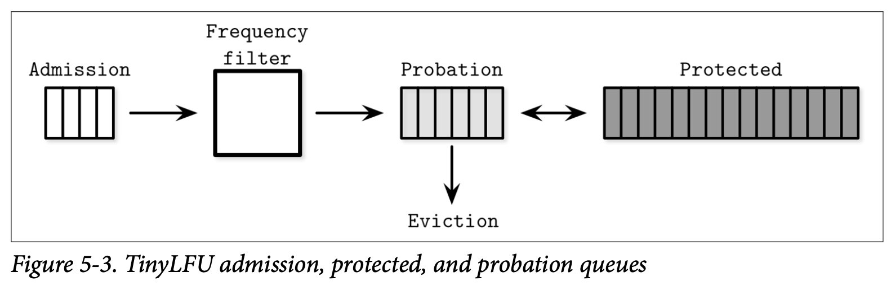还有许多其他的算法能够用来优化缓存的驱逐。我们需要小心的进行页替换策略的选择，因为它会对系统的延迟跟执行的 I/O 次数造成明显的影响。